译注:本页由 DeepSeek 官方技术报告翻译而来,公式、图、表中的数字均取自原文;图为从原文 PDF 裁出的原图,图中文字未翻译。译文若与原文有出入,以原文为准。
摘要
长程智能体的广泛应用,使模型的工作负载越来越偏重输入。尽管已有工作大幅降低了长上下文计算的成本,预填充(prefill)的计算开销依然很高,庞大的 KV 缓存也持续挤占 HBM 与 SSD 的容量以及数据传输带宽。这些计算、存储和带宽需求叠加在一起,构成了进一步降低部署成本的主要瓶颈。为应对这一挑战,我们提出 DeepSeek-V4.1-Flash:一个多模态混合专家(Mixture-of-Experts,MoE)模型,主干参数量为 552B,支持最长一百万 token 的上下文。借助因果编码器-解码器(Causal Encoder-Decoder,CED)架构,模型在解码(decode)时每个 token 激活 16B 参数,而在预填充时只激活 8B 参数,显著提升了智能体式工作负载的成本效率。为了把 KV 缓存压缩推向极限,DeepSeek-V4.1-Flash 将压缩稀疏注意力 2(Compressed Sparse Attention 2,CSA2)中的跨层 KV 缓存复用与 FP4 KV 缓存结合起来。这些设计把全局 KV 缓存占用(始终位于 HBM 中)降到每 token 890 字节,约为 DeepSeek-V4-Flash 对应占用的 1/4。此外,通过一项名为 SWA 有界重放(SWA Bounded Replay)的专门部署优化,DeepSeek-V4.1-Flash 把持久化 KV 缓存占用(始终位于 SSD 或主机内存中)降到 DeepSeek-V4-Flash 的约 1/8。尽管 KV 缓存占用小得多,模型的性能仍大幅优于基线。除此之外,我们精简了 DeepSeek-V4 的架构,并引入了若干高效的架构扩展。我们在包含 45T token 的多模态语料上预训练 DeepSeek-V4.1-Flash,并进行了全面的后训练,使其在多种基于文本和多模态的智能体式场景中都有出色表现。模型 checkpoint 可在 https://huggingface.co/deepseek-ai/DeepSeek-V4.1-Flash 获取。
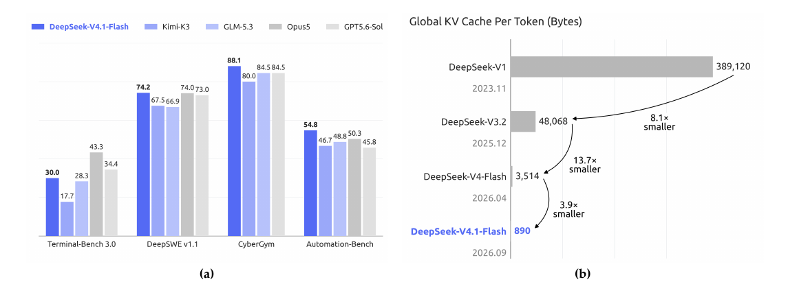
1 引言
近年来,长程智能体的应用迅速扩展,超长上下文处理成为越来越重要的模型工作负载。支撑这类负载,不仅需要高效的长序列处理,还需要对庞大的 KV 缓存进行持久化存储、复用和传输。KV 缓存管理因此成为模型部署的一项基础能力,同时也在计算、存储和通信各方面带来了巨大挑战。此前在稀疏注意力上的进展(DeepSeek-AI, 2025; DeepSeek-AI, 2026b)已显著降低了长序列处理的计算成本,这使得持久化存储和数据搬运成为日益突出的瓶颈。
具体而言,DeepSeek-V4(DeepSeek-AI, 2026b)把覆盖完整上下文的全局注意力分支与局部的滑动窗口注意力(Sliding-Window Attention,SWA)结合在一起。全局分支维护全局 KV,由主 KV 和索引器 K 组成;SWA 则维护局部 KV 状态。在窗口大小固定时,SWA 的 KV 存储有上界,与序列长度无关。因此,对足够长的序列来说,全局 KV 在运行时 KV 占用中占主导,而这部分占用受 HBM 容量限制。此外,部分 KV 会被持久化以供前缀复用,称为持久化 KV 缓存,它们受 SSD 和主机内存容量限制。I/O 与互连带宽也限制了缓存的迁移和加载。这些约束共同限制了服务吞吐,抬高了部署成本,并最终阻碍智能体在更长的任务跨度和更广的应用场景中的部署与普及。
因此,进一步降低 KV 缓存占用,对于缓解存储与通信瓶颈、降低长上下文服务成本至关重要。为此,我们开发了 DeepSeek-V4.1-Flash,一个为更激进的 KV 缓存压缩而设计的多模态混合专家(MoE)模型。DeepSeek-V4.1-Flash 拥有 552B 主干参数,原生支持多模态输入,可容纳最长一百万 token 的上下文。我们采用因果编码器-解码器(CED)架构,其中解码器的全局 KV 由编码器最后一层的隐状态投影得到。这一设计使模型在预填充时每 token 激活 8B 参数、在解码时激活 16B 参数,对输入密集的智能体式场景尤其划算。尽管规模远大于 DeepSeek-V4-Flash,在相同序列长度下,DeepSeek-V4.1-Flash 所需的运行时 KV 缓存存储只有其约 1/4,持久化 KV 缓存存储只有其约 1/8。不仅如此,DeepSeek-V4.1-Flash 的整体性能也优于 DeepSeek-V4-Flash。
这样的 KV 缓存压缩水平,来自模型架构、缓存精度和部署策略三方面的联合优化。从概念上看,DeepSeek-V4 可以视为一个基于 SWA 的局部处理主干,再辅以压缩后的全局上下文。这一视角促使我们把重点放在简化全局分支上,同时基本保留局部注意力的设计。在架构层面,我们设计了压缩稀疏注意力 2(CSA2),对全局 KV(包括主 KV 和索引器 K)以及 Top-K 索引做跨层复用,从而大幅减少 KV 缓存存储。CSA2 有三种静态指定的模式:Full、Reindex 和 Reuse。Full 模式生成全局 KV 并执行索引。Reindex 模式复用前面某一层的全局 KV,并用自己的索引器 Q 对共享的索引器 K 重新打分,选出新的 Top-K 索引。Reuse 模式同时复用前面某一层的全局 KV 和 Top-K 索引,直接执行稀疏注意力。在这三种模式下,每一层都保留自己的全局 Q 和 SWA KV。共享全局 KV 和索引器 K 减少了重复的缓存存储。此外,与采用压缩稀疏注意力(CSA)–重度压缩注意力(HCA)混合架构的 DeepSeek-V4 不同,DeepSeek-V4.1-Flash 使用纯 CSA2。在缓存精度层面,我们在训练中使用 FP4 全局 KV 缓存,性能只有轻微下降。CSA2 与 FP4 KV 缓存合在一起,把全局 KV 缓存存储降到 DeepSeek-V4-Flash 的约 1/4,如图 1(b) 所示。在部署层面,DeepSeek-V4.1-Flash 与 DeepSeek-V4 一样,在每一层都使用滑动窗口注意力(SWA)。在 DeepSeek-V4 中,我们采用一种混合策略,在持久化 SWA KV 缓存的存储成本与精确重建所需的计算量之间取得平衡。精确重建需要重放最近的 个 token,其中 是层数, 是 SWA 窗口大小。在 DeepSeek-V4.1-Flash 中,我们引入 SWA 有界重放,只重放最近的 个 token,近似重建所需的 SWA KV 状态。我们的实验表明,这样做带来的性能下降可以忽略不计。这一发现确立了一种新的存储–计算权衡:我们不必再把 SWA KV 缓存持久化到 SSD,代价只是少量的预填充重算。借助 SWA 有界重放,持久化 KV 缓存占用进一步降到 DeepSeek-V4-Flash 的约 1/8。这些优化合在一起,大大缓解了 HBM 和 SSD 的容量压力,降低了部署成本,并为更大规模的部署铺平了道路。
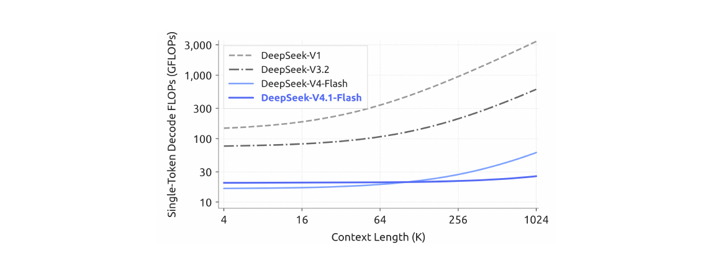
作为对 CED 和 CSA2 的补充,我们进一步精简了原有的 DeepSeek-V4 架构。此外,我们把原先的 mHC(Xie et al., 2026)设计升级为 Single-Pass mHC,并配套提供 Mega-mHC 部署内核,相比原来的四内核实现,激活值的内存访问量减半。我们还集成了 Engram(Cheng et al., 2026b)条件记忆模块来增强模型能力。同时,我们引入 DSpark(Cheng et al., 2026a)推测解码架构,通过半自回归的草稿生成和按置信度调度的验证来提升解码效率。综合所有这些架构改进后,DeepSeek-V4.1-Flash 的单 token 解码 FLOPs 在不同上下文长度下几乎保持恒定。图 2 显示,上下文长度从 4K 扩展到 1M、增长 256 倍,其解码 FLOPs 只增加 1/4,增幅远小于 DeepSeek-V4-Flash。
为了充分兑现这些架构设计带来的 KV 缓存压缩收益,并进一步提升训练和推理效率,我们为 DeepSeek-V4.1-Flash 系统性地协同优化了训练基础设施和推理系统,确保大规模多模态训练和长上下文部署高效且可扩展。训练基础设施支持视觉编码器的分离式执行、面向长序列的均衡图像分片,以及用于注意力复用的跨阶段共享状态管理。推理系统实现了编码器和解码器两条 SWA 有界重放路径。进一步的优化包括通信–计算重叠、分片的 Engram 嵌入表,以及推理内核融合。特别地,每个 CSA2 Reuse 模式层在预填充时只需执行 15 个内核,在解码时只需 11 个。我们还在主机内存中把长生命周期的全局 KV 存储与短生命周期的编码器 SWA KV 分开,并用有界重放近似重建缺失的编码器 SWA 状态。
在预训练阶段,我们在包含 45T token 的大规模多模态语料上训练 DeepSeek-V4.1-Flash。稀疏注意力在 64K 的序列长度下从头训练,没有任何稠密注意力预热阶段。预训练之后,模型具备原生的多模态能力,并支持最长一百万 token 的上下文。在我们的评测中,DeepSeek-V4.1-Flash-Base 的世界知识、推理和编码能力与 DeepSeek-V4-Pro-Base 相当,并在留出(held-out)评测上取得 5%–10% 的提升,而总参数量只有后者的 1/3,激活参数量只有 1/4。这些结果共同凸显了它出色的参数效率,也反映出面向真实部署的训练数据质量有所提升。
在这个基座模型之上,我们进行后训练,以激发其推理和智能体式能力。与上文所述的架构创新不同,我们的后训练没有引入任何算法创新:训练配方遵循标准范式,即先做监督微调(SFT),再做强化学习(RL)和同策略蒸馏(OPD),除了 DeepSeek-V4 开发中已经成熟的做法(DeepSeek-AI, 2026b)之外没有任何改动。所有实质性的变化都在数据管线上。我们开发了大规模的自动化管线用于数据合成和环境构建,并逐步扩大 RL 中使用的数据、任务和 rollout 的规模,从而把模型的能力拓展到文本、多模态和智能体式各个领域。图 1(a) 汇总了 DeepSeek-V4.1-Flash 在核心智能体式基准上的表现。我们的评测表明,尽管体量紧凑,DeepSeek-V4.1-Flash 展现出鲜明的能力特征:
- • 推理。模型具备强大的推理能力,在数学、竞赛编程等推理密集型基准上保持高准确率,表现与 Kimi-K3(Team et al., 2026a)和 DeepSeek-V4-Pro 等顶尖开源模型相当。
- • 智能体。在 Terminal-Bench 2.1(Merrill et al., 2026)、DeepSWE v1.1(DataCurve, 2026)和 AutomationBench(Shepard and Salimans, 2026)等标准智能体式基准上,DeepSeek-V4.1-Flash 的表现与闭源前沿模型持平。事实证明,它完全能够胜任日常编码任务和白领工作流。不过,在 Terminal-Bench 4.0(Marten et al., 2026a)这类需要专家级领域知识的科学向智能体式任务上,它与巨型模型之间仍有差距。
- • 多模态。在多模态领域,模型在评测视觉推理和专业图表解读的基准上,超过了 Kimi-K3 等顶级开源竞品。除正式指标之外,它在前端开发、办公自动化等真实的视觉智能体式工作流中也体现出实用价值,能够利用渲染出的屏幕截图进行视觉检查和自我修正。尽管如此,我们承认,与巨型闭源系统相比,整体性能上仍存在明显差距。
这些结果表明,DeepSeek-V4.1-Flash 已经能够在绝大多数基准上与闭源前沿模型匹敌,并有能力完成 95% 以上的真实世界任务。同时,它较小的激活占用带来了较低的推理延迟和服务成本。因此我们认为,DeepSeek-V4.1-Flash 在能力与效率之间取得了良好的平衡,可以作为一个快速、平价的助手,支持广大用户的日常工作。总之,DeepSeek-V4.1-Flash 在降低部署成本的同时,提升了模型智能和推理效率。它大幅降低了大规模部署长程智能体的成本门槛,并为长程智能体在更广泛场景中的应用创造了新的机会。DeepSeek-V4.1-Flash 也是我们持续扩大规模的新起点。在此基础上,我们将推进模型架构、预训练和后训练的联合扩展,进一步探索模型智能的前沿。
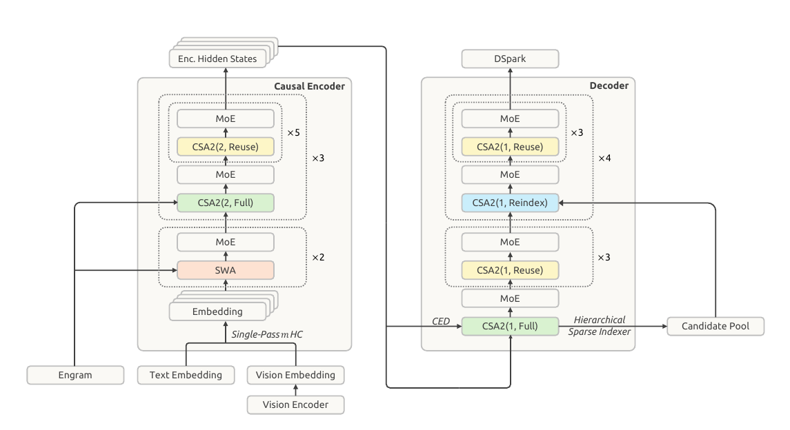
2 架构
2.1 概览
DeepSeek-V4.1-Flash 是一个多模态混合专家(MoE)Transformer,以图像和文本为输入,自回归地生成文本。其语言主干由 40 个因果 Transformer 层组成,组织为一个 20 层的因果编码器加一个 20 层的解码器。除前两层只使用 SWA 外,每一层都同时包含全局注意力和滑动窗口注意力(SWA)。视觉编码器和 MLP 投影器把图像转换为视觉嵌入,与文本嵌入一起处理;多模态数据从语言模型预训练一开始就已纳入。总体上,DeepSeek-V4.1-Flash 有 552B 主干参数和 196B Engram 参数,预填充时每 token 激活 8B 参数,解码时激活 16B。图 3 展示了 DeepSeek-V4.1-Flash 的整体架构。
因果编码器–解码器(CED)架构和压缩稀疏注意力 2(CSA2)分别针对长上下文推理中两类互补的成本。CED 用编码器输出来构建解码器的全局键值(KV)缓存,使大部分提示词 token 可以绕过完整的解码器计算,同时保留逐层局部的滑动窗口注意力。这使预填充计算量接近减半,降低了上下文不断增长的智能体式工作负载中处理新输入或未命中缓存输入的成本。CSA2 跨层共享全局 KV 以减少缓存存储,并复用稀疏选择结果以减少索引工作量。在解码器中,分层稀疏索引器(Hierarchical Sparse Indexer)把后续索引器的搜索范围限制在由较早索引器选出的候选池内,进一步减少了每个查询需要打分的条目数。
我们保留了 DeepSeekMoE(Dai et al., 2024)的共享专家和细粒度路由专家,并为图像 token 和文本 token 引入了分模态的负载均衡(Wang et al., 2024a)。Single-Pass mHC(Xie et al., 2026)修改了残差流的混合方式,以便实现更高效的内核融合;Engram(Cheng et al., 2026b)则加入了稀疏访问的条件记忆。我们在主干预训练中去掉了 MTP 模块,改用 DSpark(Cheng et al., 2026a)做推测解码。DSpark 在主干预训练阶段之后单独训练。此外,我们把主 KV 缓存压缩到 FP4,以进一步降低存储开销。后续各节将介绍这些组件以及相应的优化方面的改动。
2.1.1 多模态架构
多模态输入通路由一个视觉编码器和一个 MLP 投影器组成。对每张输入图像,视觉编码器生成一个空间网格形式的视觉特征。随后,一个 的 pixel-unshuffle 操作把每个局部邻域沿通道维重排,降低空间分辨率,再由 MLP 投影器把特征映射到语言主干的隐藏维度。最后,得到的视觉嵌入被插入输入嵌入序列中对应的图像 token 位置,由语言主干与文本嵌入一起处理。
DeepSeek-ViT
我们从头训练了一个名为 DeepSeek-ViT 的视觉编码器,用于原生处理不同分辨率的图像。DeepSeek-ViT 建立在 Vision Transformer(Dosovitskiy et al., 2021)架构之上,并做了若干修改。为了适应任意分辨率的输入,我们用 2D-RoPE 取代了标准的绝对位置嵌入。为了让 ViT 更贴近 LLM 的设计原则,我们把 patch 嵌入层的卷积换成线性投影,以确保与 Muon 优化器兼容。我们还采用 RMSNorm(Zhang and Sennrich, 2019)做归一化,采用 SwiGLU(Shazeer, 2020)作为激活函数。在把视觉特征送入 LLM 之前,我们施加一次 下采样的 pixel-unshuffle 操作,把视觉 token 数量减少为原来的九分之一,从而有效支持最高约 像素的输入分辨率。
面向 MoE 的多模态无辅助损失负载均衡
图像 token 和文本 token 的表示分布不同,在 MoE 中可能引出不同的专家路由偏好。因此,只对它们的总负载做均衡,可能会掩盖各模态内部的不均衡。为解决这一问题,我们扩展了无辅助损失的负载均衡(Wang et al., 2024a),为文本 token 和图像 token 分别维护一组逐专家的修正偏置。路由时,每个 token 使用与其模态对应的修正偏置来选择专家,而对被选中专家的输出加权时仍使用原始的路由分数。每个训练步之后,两组偏置根据各自的专家负载独立更新。这一设计在每个模态内部均衡了专家的利用率,有助于多模态训练的稳定和高效。
2.2 因果编码器-解码器(CED)
在智能体式工作流中,频繁的工具调用会产生大量预填充请求,一旦 KV 缓存未命中,就会带来沉重的计算开销。为缓解这一预填充瓶颈,我们受 YOCO(Sun et al., 2024)启发,提出因果编码器-解码器(CED)架构。YOCO 让上半部分的层直接共享下半部分生成的 KV 缓存,以此减少预填充计算。在这一思路的基础上,CED 引入了一系列结构改进,既提升了 KV 缓存的整体容量,也加深了 KV 生成的计算深度。结果是,CED 成功削减了近一半的预填充计算,同时保持与基线相当的性能。
对于全局注意力,CED 把 Transformer 底部的 层作为因果编码器。对于上半部分的层(即解码器,),KV 条目并不由各自的隐状态 导出,而是使用依层而定的投影权重( 和 ),直接从第 层的隐状态 投影得到:
| (1) |
其中 和 分别表示 KV 条目及其对应的压缩权重。这一设计使 CED 在预填充阶段只需计算前一半的层,以极小的计算代价获得上层的全局 KV 缓存。
对于滑动窗口注意力(SWA),CED 在所有层上都保持常规的逐层计算。具体来说,对任意层 ,局部的键和值都直接由当前层的隐状态 导出。这一设计有效增加了局部 KV 生成的计算深度。然而,保持这种逐层计算就需要一个 SWA 重放过程。在预填充阶段,为解码器计算 SWA KV 缓存需要额外处理 个 token(其中 表示窗口大小)。对于每轮提示词都很短的多轮交互,解码器中的这部分计算开销不可忽略。幸运的是,已有工作(Chen et al., 2025)表明,SWA 实际的有效感受野远小于理论上的 。受这一观察启发,我们引入解码器 SWA 有界重放(Decoder SWA Bounded Replay),在 SWA 计算中只预填充提示词的最后 个 token,从而显著降低计算成本。更多细节见第 3.2.2 节。
总体而言,对于序列长度 ,CED 把预填充复杂度从 降到 ,相当于把整体计算量减半。
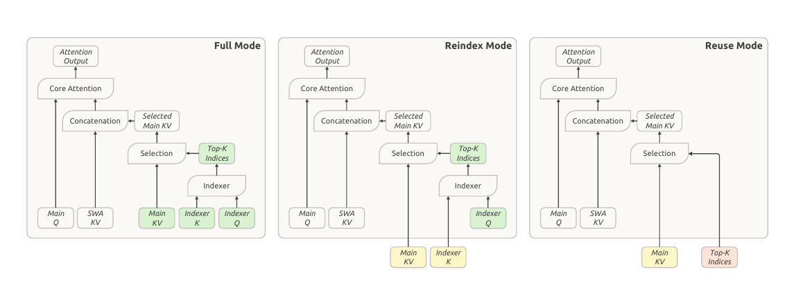
2.3 压缩稀疏注意力 2(CSA2)
服务长上下文,需要同时控制 KV 缓存存储和注意力计算。这些成本可以沿三个相乘的维度来削减:条目大小,其中 GQA(Ainslie et al., 2023)减少 KV 头的数量,MLA(DeepSeek-AI, 2024a)让各个头共享一个小的隐变量;序列维度,即把每 个 token 压缩成一个条目,如 DeepSeek-V4(DeepSeek-AI, 2026b)中的 CSA 和 HCA;以及层维度,即某些层复用其他层的缓存(Brandon et al., 2024)和选择结果而不保留自己的,或者干脆被更高效的层替换。已有工作表明,沿层维度做压缩是有效的:IndexCache(Bai et al., 2026)跨层复用 Top-K 索引以削减索引器计算;YOIO(Sun et al., 2026b)只计算一次稀疏路由并在所有层间共享;HySparse(Gao et al., 2026)让稀疏层复用稠密层的 KV 缓存。然而,只做索引复用并不能节省主 KV 存储,全网络范围共享路由会限制性能,混合式设计则仍然保留了完整注意力层;更重要的是,这些方法没有一个能覆盖全部三个相乘的维度。
CSA2 联合利用这三个维度:它跨层共享主 KV 和索引器 K,并允许各层复用 Top-K 索引,其中缓存共享与索引复用是解耦的。它把这些复用策略与一个简化的压缩器以及一个分层稀疏索引器结合起来,后者缩小了解码器中后续索引层的搜索域。
与 CSA 类似,CSA2 包含一个轻量的索引器,它用索引器 Q 和索引器 K 给主 KV 条目打分,并为每个查询选出 Top-K 个条目。每个 Q 同时关注被选中的条目和逐层局部的滑动窗口 KV(SWA KV)。CSA2 也把未压缩的主 KV 设置作为压缩比为 1 的特例包含在内。同时,CSA2 简化了压缩器和索引器。在 CSA 中,压缩比为 时,每个主 KV 条目由 个原始 KV 缓存条目生成,相邻压缩条目的源条目相互重叠。它还在压缩时加入绝对位置嵌入,用来编码这 个条目的位置。CSA2 去掉了这种重叠和绝对位置嵌入。此外,CSA2 通过投影主 KV 条目来得到索引器 K,取代了 CSA 中从隐状态出发的独立压缩通路。这两项设计都简化了实现,并提高了训练效率。
第 2.3.1 节和第 2.3.2 节分别介绍跨层复用策略和分层稀疏索引器。
2.3.1 跨层 KV 与索引复用
每个 CSA2 层被静态指定为三种模式之一:Full、Reindex 或 Reuse。在这三种模式下,该层都会计算自己的查询和 SWA KV,并把它们与选中的主 KV 条目一起使用,产生新的注意力输出。各模式的区别在于如何获得主 KV、索引器 K 和 Top-K 索引。图 4 展示了这三种模式。
Full 模式。该层计算自己的主 KV 和索引器 Q,由这份主 KV 投影出索引器 K,并运行索引器产生新的 Top-K 索引。因此它执行完整的 CSA2 计算路径,各组件的职责与 DeepSeek-V4 中一个完整的 CSA 层相同。
Reindex 模式。该层复用前面某一层最近可用的主 KV及其对应的索引器 K。索引器计算自己的查询,对复用的键重新打分,并产生新的 Top-K 索引。这样,稀疏选择可以随层变化,而主 KV 和索引器 K 保持共享。
Reuse 模式。该层复用最近可用的主 KV,以及前面某个 Full 或 Reindex 模式层针对这份主 KV 计算出的最新Top-K 索引。它直接用这一选择结果执行注意力,既不计算索引器 Q,也不计算索引分数。
共享主 KV 和索引器 K 减少了缓存存储,而复用 Top-K 索引则避免了额外的索引器计算。Reindex 模式在保留缓存共享的同时,允许被选中的条目随层变化。当 CSA2 与 CED 结合时,被指定为 Full 模式的解码器层由第 层(即因果编码器的最后一层)的隐状态计算自己的全局 KV。Reindex 和 Reuse 模式保持不变。
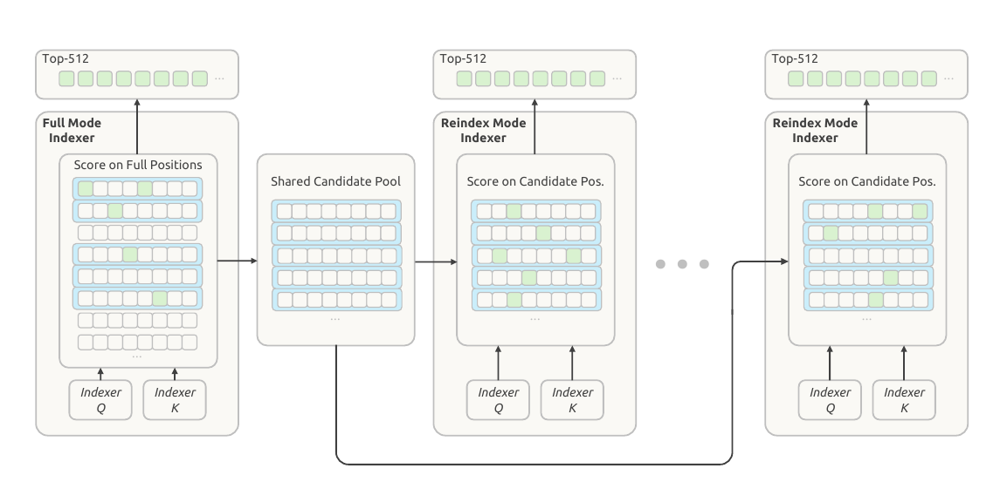
2.3.2 分层稀疏索引器
跨层索引复用减少了索引器的求值次数,但剩下的索引器仍要对因果可见的全部上下文打分。对于极长的上下文,这一成本仍是主要的计算瓶颈。已有工作通过在 token 级索引之前先对池化的块表示进行打分和剪枝,引入了索引器稀疏性(Xu et al., 2026b)。我们发现,在解码器中,较浅层索引器的信息可以很自然地用来限制较深层索引器考虑的候选,而无需增加任何额外状态。因此我们引入分层稀疏索引器,它只用于 CED 的解码器,以减少解码过程中这种重复打分。对每个查询,第一个被指定为 Full 模式的层构建一个候选池,后面做重新索引的层以它作为搜索域。在候选池大小固定时,这把较深层索引器每个查询的成本从随上下文长度线性增长变为常数。该机制是训练感知的,并在后训练阶段引入:候选限制在训练和推理中以完全相同的方式施加,因此较深层的索引器是在与推理时相同的搜索域下优化的。图 5 展示了这一过程。
这第一个 Full 模式层对所有因果可见的主 KV 位置打分,并为自己的注意力产生 Top-K 索引。它还执行按块的候选选择:每个块被赋予其内部各位置索引分数的最大值,分数最高的若干块被选中。随后,它把选中块所覆盖的位置收集成一个候选池,这个池比最终的 Top-K 集合更大。例如,选出 2,048 个块、每块 8 个位置,就得到 16,384 个候选位置。这个池决定了后续索引器在哪里搜索;最终的 Top-K 选择则决定每一层读取哪些主 KV 条目。
后续处于 Reindex 模式的层只对相应查询的候选位置打分,并在这个池内选出自己的 Top-K 条目。处于 Reuse 模式的层不做新的索引,而是使用针对其所复用的主 KV 计算出的最新 Top-K 索引。因此,候选池在各索引层之间共享,而它们的最终选择可以不同。
在候选池大小固定时,每个后续索引器为每个查询打分的位置数有上界,与上下文长度无关。第一个 Full 模式层仍然要扫描整个因果可见范围。因此,分层索引降低了后续索引器求值的成本,同时保留了最初那一遍全范围扫描。
2.4 高效的架构扩展
2.4.1 Single-Pass mHC
在 DeepSeek-V4 中,我们引入了 mHC(Xie et al., 2026),它在相邻的 Transformer 块之间维护 条残差流。对每个 token,我们把这些流记为 ,其中 是块的编号, 是隐藏维度。这些流按如下方式更新:
| (2) |
其中 、 和 是由 预测出的逐 token 系数。系数预测器 包含归一化和投影。
理想情况下,两个块之间的残差变换是一个从 到 的单一映射,其中 是当前块的输入, 是前一个块的输出。这样的映射需要 次读和 次写,因此激活值内存访问量的下界是 。在实践中,DeepSeek-V4 对 (2) 采用多遍实现,由于数据依赖,三个内核依次执行:
| 残差更新,对 收缩 (3) | ||||||
| 系数计算,对 收缩 (4) | ||||||
| 输入混合,对 收缩 (5) |
这三个内核分别读取 、 和 个值,总共写入 个值。算上 中的 pre-norm,激活值内存访问总量为 ,是下界的两倍。
在 中,归一化权重被离线折叠进投影权重,RMS 除法则在投影之后施加。因此,三个阶段中的两个可以共用对残差的一次遍历:残差更新不需要沿隐藏维度做归约,所以 的每个 tile 一经算出,就可以立即用来累加投影输出以及计算 RMS 所需的平方和。输入混合无法融合进这一遍,因为 要等到对所有隐藏 tile 的归约完成后才可用。因此它需要第二次读取 。这第二遍也可以把输入 pre-norm 一并纳入。这种两遍实现总共需要 次激活值读写,比下界多读一次 。
因此我们引入 Single-Pass mHC,把输入混合系数平移一个块,即每个块使用前一个块产生的混合系数,于是上述依赖消失:
| (6) |
现在输入混合使用 而不是 ,因此不再依赖由 计算出的系数。 的每个 tile 可以立即同时用于输入混合和系数预测,无需等待完整的归约。从实验上看,这一平移带来的性能下降可以忽略。
在预训练中,我们保留现有的多内核实现,因为这一平移只改变了每个块应用哪一组混合系数。在部署中,我们把残差更新、输入混合和系数预测融合成一个内核,即 Mega-mHC。该内核实现 mHC 时需要 次激活值读写,实现 Single-Pass mHC 时需要 次激活值读写。Mega-mHC 沿隐藏维度按 tile 处理 。每个 tile 既用来计算混合后的输入,也用来累加为下一个块预测 所需的量。该内核还纳入了输入 pre-norm 和 FP8 转换。这样,残差只读一次、写一次,达到了理想映射的 次读和 次写,并把我们原始实现的激活值内存访问量减半。
2.4.2 Engram
我们为 DeepSeek-V4.1-Flash 加入了 Engram(Cheng et al., 2026c),这是我们在此前工作中提出的条件记忆模块,用于把记忆与计算解耦。我们沿用 Engram 的原始设计—分词器压缩、多头哈希、上下文感知门控和多分支集成—并做了两处修改。第一,我们去掉了短因果卷积,因为在我们的推理栈中,它带来的性能增益不足以抵偿所增加的复杂度。第二,我们用基于动量的更新加 Sinkhorn 平衡来优化 Engram 嵌入,详见第 2.5 节。
我们把 196B Engram 参数平均分配给两个模块。每个模块使用的 -gram 阶数为 ,每个阶数有 8 个哈希头,总嵌入维度为 2048。每个头索引一张约 16M 条目的表,各表的大小取互不相同的素数。嵌入表和键/值投影都使用 FP8 精度。这两个模块放在第 1 层和第 14 层(从零开始编号),以均衡训练流水线各阶段的内存使用。推理时,确定性寻址使嵌入可以通过后台 RDMA 传输从主机内存预取,其中第一个模块的预取与第一个 Transformer 块的计算重叠进行。Engram 训练和推理的更多实现细节在第 3.1.3 节讨论。
2.4.3 DSpark
我们为 DeepSeek-V4.1-Flash 配备了 DSpark(Cheng et al., 2026a),这是一个推测解码模块,把半自回归的草稿生成与按置信度调度的验证结合起来。草稿模型由三个 Transformer 块组成,滑动注意力窗口为 128 个 token。在这些块上做一次前向传播,即可并行算出五个草稿位置的基础 logits,同时由一个轻量的马尔可夫头建模草稿 token 之间的依赖关系。一个置信度头预测每个位置的条件接受概率,用来估计前缀存活概率。调度器把这些估计与实测得到的引擎吞吐曲线结合起来,为每个请求动态选择验证长度,目标是在当前系统负载下最大化全系统的期望 token 吞吐。
DeepSeek-V3(DeepSeek-AI, 2024b)中的 MTP 模块在整个预训练过程中与主干联合训练;与之不同,DSpark 是在预训练之后的一个专门阶段引入的。在这一阶段,我们只训练 DSpark,并保持主干冻结。在后训练期间,我们继续让 DSpark 与主干一同训练,但不把 DSpark 目标的梯度传回主干。这使 DSpark 始终与不断演化的策略保持对齐,从而既能加速在线服务,也能加速 RL 和 OPD 的 rollout 生成。
2.4.4 FP4 主 KV 缓存
长上下文的智能体工作负载需要为每个请求维护很大的 KV 缓存,这抬高了服务成本。DeepSeek-V4 已经对 FP4 的索引器查询和键使用了量化感知训练(QAT)(Jacob et al., 2018),既加速索引计算,也减小索引器缓存的大小。我们采用 OCP 标准的 MXFP4 格式(Rouhani et al., 2023),以支持尽可能多的硬件平台,尽管在我们的实验中其他格式的精度更高。现在我们把 QAT 扩展到主 KV 缓存,在这里 FP4 的作用是减少存储,而不是加速矩阵乘法。在注意力之前先把缓存值反量化,让我们可以使用一种精度更高的格式,而不要求硬件对该格式提供原生的矩阵乘法支持,从而保持跨硬件平台的兼容性。
在评估过的几种约四比特格式中,我们选择 E2M1,并为每 16 个通道配一个 E4M3 缩放因子;这一做法沿用 NVFP4(Alvarez et al., 2025),但省去了它的第二级全局缩放因子,以兼顾精度和简洁。省去这一缩放因子后,主 KV 缓存仍有充足的动态范围:该格式支持的幅值最高可达 ,远高于缓存的幅值上界。在 DeepSeek-V4.1-Flash 中,训练得到的 RMSNorm 权重的最大幅值约为 。经过 RMS 归一化后, 通道的 KV 隐变量的 L2 范数最多约为 。RoPE 保持这一范数不变,所以旋转之后各通道绝对值的最大值也以约 为界。此外,训练中观察到的最大幅值在 左右。因此,省去全局缩放因子不会造成可测量的精度下降,并且简化了缓存布局。
为了在 DeepSeek-V4.1-Flash 中启用 FP4 主 KV 缓存存储,我们在后训练阶段引入 QAT。非 RoPE 部分和 RoPE 部分使用相同的量化格式。我们在 RoPE 之后对缓存做量化:在我们的实验中,在 RoPE 之前量化只带来极小的精度提升,却会在解码时引入额外开销。由于 SWA KV 缓存对量化敏感,我们对它保留 FP8。与 DeepSeek-V4 中的 FP8 主 KV 缓存相比,这种格式使存储占用接近减半,无论是在 HBM 中还是卸载到 SSD 时都是如此。
2.5 优化
在 DeepSeek-V4 所用优化配置的基础上,我们做了一些新的修改,使其与架构设计更加契合。
第一,我们使用逐头的 Muon(head-wise Muon),即先把 Query 权重按头拆开,再施加 Muon 更新。这里简要讨论这一设计的动机。如果把 Muon 看作一种预条件梯度下降,原始 Muon 对所有头使用同一个预条件子,而逐头 Muon 为不同的头提供不同的预条件子。这一设计能更好地应对注意力头之间的异质性 Zhang et al., 2024; Zhang, 2026, Section 3。结果上,我们观察到逐头 Muon 优于原始 Muon。逐头 Muon 在实验上的优势也在 GLM 5(Zeng et al., 2026)和 Kimi-K3(Team et al., 2026a)中得到了验证。
第二,对新引入的 Engram 参数使用 Adam,会大幅增加优化器状态的内存占用。为了减少训练时的内存使用,我们改用基于动量的更新加 Sinkhorn 平衡,来优化 Engram 嵌入表、token 嵌入和预测头。Sinkhorn 平衡此前已在 SinkGD(Scetbon et al., 2025)中用于线性层的权重矩阵;这里我们把它扩展到这些大型参数矩阵上。与 Muon 一样,这种方法只需要一个动量缓冲区,同时在实验上优于 Adam。
基本配置。
对于归一化层权重以及其他非矩阵参数(包括偏置和缩放因子),我们保留 AdamW(Loshchilov and Hutter, 2019)。对于语言模型主干中线性变换的权重矩阵、Engram 投影层以及视觉-语言投影器,我们使用 Muon(Jordan et al., 2024)。对于 Query 和 Key 权重,我们使用逐头 Muon。我们对 Muon 施加解耦权重衰减和 Nesterov 动量(Nesterov, 1983; Liu et al., 2025);归一化层权重同样施加权重衰减,而偏置和缩放因子不施加。Sinkhorn 平衡的更新同样使用 Nesterov 动量,但不施加权重衰减。在预训练期间,我们在学习率衰减阶段之前保持视觉编码器冻结,而它的最后一个归一化层和视觉–语言投影器保持可训练。学习率开始衰减时,我们解冻视觉编码器,并以较小的学习率让它与 LLM 联合优化。
用于 Engram / 嵌入 / 预测头的 Sinkhorn 平衡更新。
完整流程汇总在算法 1 中。从总体上看,它遵循与 Muon 相同的工作流程,只是用 Sinkhorn 平衡取代了 Newton–Schulz 正交化。我们把矩阵中较大的那个维度记为 ,对嵌入表和预测头而言它对应词表大小;把隐藏维度记为 。
算法 1 带 Sinkhorn 平衡的动量更新
1: 权重 、梯度 、动量 、动量系数 、基础学习率 、学习率修正 、数值常数 和 ,以及奇数个归一化步数
2:
3: Nesterov 动量
4: 且
5:
6: 若 ,则置 屏蔽接近零的行
7: for do
8: if 为奇数 then
9: for all do
10:
11: end for
12: else
13: for all do
14:
15: end for
16: end if
17: end for
18: 把单位行 范数转换为单位行 RMS
19: 匹配 Adam 的更新幅度
20:
给定 Nesterov 动量更新 ,Sinkhorn 平衡寻找对角缩放矩阵 和 ,使得
| (7) |
因此,该流程使更新矩阵的逐行 RMS 和逐列 RMS 近似相等。这里,一行对应一个 token 索引或一个 n-gram 标识,一列编码一个隐藏特征。Sinkhorn 平衡通过同时沿行和列做归一化,来利用这种 token–特征结构。为了数值稳定,满足 的行会被屏蔽。因子 把单位行 范数转换为单位逐行 RMS。另外,我们把有效学习率调整为 ,以匹配 Adam 的更新幅度。我们取 ,这与 Moonlight(Liu et al., 2025)中使用的因子 接近。
更广泛地说,Sinkhorn 平衡与那些利用矩阵或张量轴结构的优化器密切相关(Shazeer and Stern, 2018; Zhang et al., 2025a; Wen et al., 2025; Glentis et al., 2025; Deng et al., 2026; Yuan et al., 2026; Xu et al., 2026a)。例如,Adafactor(Shazeer and Stern, 2018)以另一种方式做逐行和逐列归一化,Adam-mini(Zhang et al., 2025a)则对嵌入表和预测头使用另一种逐行归一化。这些归一化策略在优化性能和通信开销上可能有所不同。更细致的研究留作未来方向。
3 通用基础设施
3.1 训练基础设施
3.1.1 多模态训练基础设施
对比学习中的通信-计算重叠。
视觉编码器(vision encoder)先用对比目标进行优化,再用生成式的下一 token 预测损失进行微调。在对比阶段,损失是在整个 batch 的文本-视觉对上计算的,因此两种模态的特征都必须在数据并行的各个 rank 之间做 all-gather,带来大量通信开销。由于文本特征的梯度只依赖于收集到的视觉特征,对称地,视觉特征的梯度也只依赖于收集到的文本特征,所以每一次 all-gather 都可以与前向或反向传播重叠执行,而不必让流水线停下来等待:
| $$(V);;((T);|;(V));;_{}\ | ||
| ;;((T);|;(T));;_{};;(V),$$ |
其中 和 分别表示视觉特征和文本特征, 表示计算 与通信 重叠执行, 表示梯度计算。在这一调度下,视觉特征在文本前向传播期间被收集,文本特征在文本反向传播期间被收集,于是两次 all-gather 都完全隐藏在有效计算之后。
端到端并行。
为了应对视觉编码器与 LLM 之间在模型和数据上的异构性(Zhang et al., 2025b),我们采用了近期训练系统中使用的解耦编码器设计(Team et al., 2025; Team et al., 2026b)。视觉编码器被复制到 LLM 参数树之外,每个训练步被划分为三个阶段:视觉编码器前向、LLM 前向/反向、视觉编码器反向。这种分离避免了视觉编码器计算与 LLM 计算之间的相互干扰。经过负载均衡的视觉处理被限制在第一和最后一个阶段,而 LLM 阶段不含任何视觉计算,保留了纯文本训练的并行策略。
长序列多模态训练优化。
DeepSeek-V4.1-Flash 在最长一百万 token 的序列上训练,在预训练和后训练阶段都有相当大比例的训练发生在超长序列长度上。在这样的序列长度下,多模态样本会造成严重的 I/O、CPU 和内存瓶颈。
• 均衡的图像分片。在预训练期间,单条图像密集的超长序列在加载时就可能耗尽一台主机的 I/O、CPU 和内存,因此每条序列的图像会按负载均衡的方式分片到各个 CP rank 上,并且每张图像恰好只加载一次。在图像只读取一次的前提下,只要满足下式,加载就能一直隐藏在计算之后:
其中 是 token 数, 是每个 token 的原始字节数, 是每个 token 的计算量,、 分别是文件系统带宽和 GPU 带宽。由于 被约掉,该判据只涉及每 token 的量( 和 ),与序列长度和集群规模无关; 由视觉模块的配置决定(例如分辨率上限或空间下采样倍率)。因此,存储吞吐只会在每 token 计算量很低的小模型上(例如消融实验中)成为瓶颈,而生产规模的模型仍然受限于计算。
• 增量图像传输。除了上述均衡分片之外,强化学习的 rollout 只以增量方式把图像传给推理引擎,并把引擎在 CPU 侧的解码和预处理输出缓存到分布式文件系统上,供后续 rollout 和后续训练复用。
3.1.2 面向 CSA2 的注意力共享训练
在第 2.3 节中,我们介绍了 CSA2,这是一种具有三种模式的注意力共享方法,其中一些模式会在多个层之间共享主 KV、索引器 K 和 Top-K 索引中的一项或多项。要在大规模分布式训练中支持 CSA2,除了注意力计算本身之外还需要额外的协调。具体来说,共享注意力组件的各层可能被放置在不同的流水线阶段(pipeline stage)上,这使得直接复用模块与传统的阶段本地执行方式不兼容。因此,我们采用了若干设计来支持 CSA2 训练。
影子索引器(shadow indexer)用来解决这一问题:在每个参与的阶段上放置一个轻量的可执行副本,同时为共享参数保留唯一的逻辑属主。属主仍然负责优化和 checkpoint,而参数同步和梯度聚合则让各个影子副本在整个训练过程中保持一致。这一设计保留了原有的模型语义,又不需要流水线调度器把共享层当作特殊的执行单元来处理。
流水线载荷扩展(pipeline payload extension)在源层与消费层跨越流水线边界时,为下游消费者提供所需的中间表示和稀疏路由信息。这些状态被并入已有的点对点通信路径,并按照与上下文并行(context parallelism)一致的方式切分,既避免了不必要的复制,又保持了相应的梯度流。
micro-batch 级的共享状态管理负责跟踪同时处于活跃状态的各个流水线 micro-batch 所关联的状态,并在前向执行、激活重计算和反向传播之间协调它们的生命周期。共享状态会一直保留到最后一个消费者完成为止,随后立即释放,以限制额外的内存开销。同一套运行时抽象还负责处理阶段放置和源-消费者关系,使注意力实现在访问共享状态时无需依赖物理的流水线布局。
再加上对优化器、checkpoint、warm-up 和计算图追踪流程的轻量适配,这些机制使 CSA2 能够在现有的分布式训练接口和流水线调度下透明地运行。
3.1.3 Engram
Engram 的 embedding 表按行切分,分布在大小为 engram parallel size 的专用进程组上。组的大小控制着单设备内存用量与 embedding 查找的通信范围之间的权衡。优化器状态则进一步在每个表分区的各副本之间分片。Engram 的查找索引只取决于输入 token 序列。因此,在当前训练步中各流水线阶段开始处理 microbatch 之前,就会为整个本地 batch 发起 embedding 预取,从而把对流水线执行的干扰降到最低。embedding 梯度在反向传播期间被缓冲,并在主干反向传播结束后返还给各自所属的 rank。为了与多模态训练高效结合,embedding 预取和梯度传输被安排为与视觉编码器的前向和反向计算重叠执行。embedding 以 FP8 存储和取回,取回的数值和缩放因子直接传给后面的 GEMM。在 Engram 表更新方面,Sinkhorn 归一化会跨迭代维护行缩放向量和列缩放向量,以避免反复写入完整的归一化矩阵。行归一化与部分列统计量的累加被融合进同一个内核,以进一步减少内存流量。在 RL rollout 期间,Engram 的 embedding 表常驻于 GPU 内存中。这种放置方式减轻了主机内存压力,也有助于避免主机内存碎片导致的内存不足(out-of-memory)故障。
3.2 推理系统
DeepSeek-V4.1-Flash 在设计上把推理效率作为头等大事。尽管它的架构在概念上比较复杂,最终得到的推理内核流程却十分简洁。通过合理的内核融合(kernel fusion),我们把繁杂的操作封装起来,让硬件资源在少数几个融合内核内部保持完全流水化——其中包括 FlashMLA(Li and Liu, 2025)中的 fused-RoPE-attention-RoPE-cast 内核,DeepGEMM(Zhao et al., 2025)中的 Mega-Gate、Mega-mHC 和 Mega-MoE 内核,TileKernels(Wang et al., 2026a)中的各内核,以及 DeepSelect(Qian et al., 2026)中的 TopK 内核。结果是,绝大多数 Transformer 层(即 CSA2 工作在 Reuse 模式的那些层)在预填充(prefill)时只需执行 15 个内核,在解码(decode)时只需执行 11 个内核,从而同时实现了高吞吐和低延迟的推理。
在部署层面,我们采用编码器-预填充-解码(Encoder–Prefill–Decode,EPD)解耦,使视觉编码、预填充和解码能够各自独立扩缩,并在执行上相互重叠。
3.2.1 持久化 KV 缓存管理
在相同负载下,V4.1 把持久化 KV 缓存(persistent KV cache)的占用降到了 V4 的 1/8。这一下降来自两个相乘的因素:持久化 KV 缓存不再存储 SWA KV,这使其大小几乎减半;而仍保留在其中的全局 KV,又通过架构和精度上的优化被进一步压缩到 V4 占用的 1/4。
在 V4 的部署中,SWA KV 占了持久化 KV 缓存容量的将近一半。在该缓存内,全局 KV 和 SWA KV 各自独立管理,由 LRU 淘汰策略控制。全局 KV 被完整存储,命中时复用整个前缀。与之不同,SWA KV 只在两个特定位置缓存——提示词的末尾和输出的末尾——以便支持重新生成和多轮会话;命中后可以从该缓存位置继续计算。为了保持较高的命中率,我们在 SSD 上配置了足够大的持久化 KV 缓存,使得在典型负载下两类 KV 都能驻留 72 小时以上。尽管只在指定位置保留 个 KV 条目,未经压缩的 SWA KV 缓存仍然带来了可观的存储开销,在每轮都很短的多轮对话中尤其如此。
持久化存储 SWA KV 既昂贵又低效,因为它的访问模式与持久化 KV 缓存的长保留策略并不匹配。全局 KV 呈现长尾式的复用,而 SWA KV 只会在活跃会话内一个很窄的、分钟级的窗口中被复用,一旦会话结束或下一轮开始就成了死数据。V4 技术报告曾提出 Zero SWA Caching,通过重新计算缺失的 SWA KV 来避免存储开销。然而,精确恢复需要对 个 token 做一次完整的前向传播,这一代价在生产部署中被证明是难以承受的。
因此,V4.1 对持久化 KV 缓存管理做了如下修改:
- SWA KV 不再缓存在持久化 KV 缓存中,而是存放在一个分布式内存池里,该内存池由每台机器 10% 的主机 DRAM 划拨而成。虽然这个池的总容量要小得多,但它的 TTL 很短(只有几分钟),过期条目可以立即被回收给新会话使用;在真实负载下,这样的高周转率足以服务绝大多数并发的活跃会话。全局 KV 仍然留在持久化 KV 缓存中,并保证至少 72 小时的生命周期。
- 淘汰 SWA KV 不可避免地会造成未命中,而借助一种轻量的兜底机制——编码器 SWA 有界重放(Encoder SWA Bounded Replay,详见第 3.2.2 节),这种未命中的代价仍然可以承受。对于那些不可避免但并不常见的、命中全局 KV 却未命中 SWA KV 的请求,它只需重新计算 个 token 就能恢复缺失的状态,而不必做一次完整的 个 token 的前向传播。这种有界重放是整个设计的基石:它把一次灾难性的未命中变成了平缓而廉价的降级,从而使把 SWA KV 移出持久化 KV 缓存的做法站得住脚。
3.2.2 SWA 有界重放
由于 SWA 的依赖关系会逐层累积,要精确重建 层的 SWA KV 就需要重放 个 token。SWA 有界重放(SWA Bounded Replay)则只重放最近的 个 token,并把 SWA 截断到重放片段之内,接受近似的状态:对于从位置 开始的重放,位置 处的 query 关注 范围内的 SWA key。
编码器 SWA 有界重放。
编码器 SWA 有界重放使前缀缓存只依赖于全局 KV,从而可以把 SWA KV 从持久化 KV 缓存中移除。
当编码器的 SWA KV 缺失时,我们重放已缓存前缀的最后 个 token,并把它们与未缓存的后缀一起处理。被重放的 token 只重新生成 SWA KV,直接复用已缓存的全局 KV,既不重算也不覆盖;而未缓存的后缀则同时生成全局 KV 和 SWA KV。
按照这一设计,重放得到的前缀状态是近似的,因此为未缓存后缀计算出的全局 KV 和 SWA KV 取决于缓存命中的位置,在不同位置之间并不在数学上完全一致。令人鼓舞的是,我们的实验证据表明,这种有界重放策略几乎不会损害回答质量。
解码器 SWA 有界重放。
解码器 SWA 有界重放把解码器的前向传播限制在 个 token 之内,使预填充的总计算量几乎减半。
在 CED 下,解码器的全局 KV 是由编码器最终的隐藏状态投影得到的。让预填充在编码器处就结束的唯一障碍是解码器的 SWA KV:它由每个解码器层自身的隐藏状态生成,并且是最初几步解码所必需的。由于我们从不缓存解码器的 SWA KV,要精确重建它就需要让 个解码器层在提示词最后 个 token 上运行,当一个很长的已缓存前缀后面只跟着一小段未缓存后缀时,这样做代价很高。因此,我们在这一场景下同样采用有界重放策略:每次预填充时,我们都重放提示词的最后 个 token,把它们的编码器输出在同样的 SWA 截断下送过各解码器层,得到的解码器 SWA KV 只用于解码,不用于前缀缓存。
按照这一设计,重建出的解码器 SWA KV 与完整解码器前向传播得到的结果并不在数学上等价。同样,我们发现这一策略对回答质量的影响微乎其微。为了更加稳妥,我们还在后训练期间模拟了同样的重放,让模型在训练中就适应这一机制。
4 预训练
4.1 数据构建
文本数据整理
为了追求更高的智能水平,我们不再局限于小规模数据实验所反映的、通用的样本级质量,而是更加关注能够提供独特信息增益的多样语料之间的整体相互作用。我们采用了更加系统化、标准化的数据构建流水线,以提升数据质量并优化数据配比。具体来说,基于更全面的评测,我们精心设计了一套覆盖模型参数量和训练数据量的规模阶梯(scaling ladder),用来指导大规模训练。我们过滤掉了信息增益有限的模型生成内容,包括能力较弱的模型的输出和低质量的机器翻译文本。我们把这类内容视为隐式重复,因为它们在很大程度上只是对已有信息的改写,在长时间的训练中可能变得有害。我们还探索了模型在环(model-in-the-loop)的数据迭代方法,为未来的大规模合成数据打基础。此外,我们引入了更多领域专家来构建细粒度的数据质量评估维度。与上一版本相比,新语料纳入了更多来自新发布的开源仓库、提交、库和新兴框架的较新代码,以覆盖更广泛的编程语言,并更好地反映当下真实的软件工程场景。
多模态数据整理
我们的多模态预训练数据集主要由三类数据构成:图文对、图文交错数据和领域专用数据。我们的出发点是,原始网页数据天然地提供了丰富的多模态知识,因此我们没有做大规模的数据合成,而是优先清洗并以原生形态使用这些数据,从而在预训练期间实现最直接、最可扩展的视觉知识压缩。在最初的数据收集中,我们发现自己的爬虫系统过度偏向以文本为主的网页内容,于是我们从 Common Crawl 出发重新引导(re-bootstrap)了它,以提高对多模态来源的覆盖。对于图文数据,我们从网页中提取图像及其关联的 alt 文本,用图文相关性阈值进行过滤,并基于图像语义去重。对于交错数据,这一子集主要由网页和 PDF 构建而成。处理大规模多模态语料通常比处理纯文本语料需要更高的 CPU 和磁盘存储成本,这促使我们把交错数据的构建组织成成本逐级递增的若干阶段。在图像抓取之前,我们先用启发式和统计式过滤、去重以及质量模型挑选出高价值文档。留存下来的文档随后被组装成图文交错序列,并以感知图像的方式再次进行过滤和去重。最后,我们使用 SmolVLM(Marafioti et al., 2025)对图文内容进行严格的质量打分,从而提取出高质量的交错数据。在这一过程中被过滤掉的文档,有一部分会经过筛选和重组被回收为额外的图文对。为了弥补网络采集数据的固有局限,我们还纳入了领域专用数据集,以增强模型在细粒度视觉感知(例如视觉定位和指点)、光学字符识别(OCR)以及长尾知识获取方面的能力。我们还收集了大量图像-代码对和 computer-use 轨迹,以提升多模态的智能体式理解能力。
数据整合与去重
由于纯文本数据和多模态数据是通过不同的流水线处理的,我们把最终的训练语料构建为这两个数据源的并集。对于重叠的样本,我们用其多模态版本替换纯文本版本,并采用两种配置中较大的 epoch 数。完成这一替换后,所得语料中纯文本数据与多模态数据的 token 比例为 。我们通过联合预取和分配训练样本,尽量减少预训练与上下文扩展两个阶段之间的样本重叠。超长文档在混合之前会被确定性地预先切分,以保证训练 token 在各数据分片和各训练步之间均匀分布。我们还进一步改进了 best-fit 打包算法,使填充率不超过 。
4.2 预训练设置
4.2.1 模型设置
我们把 Transformer 层数设为 40,隐藏维度 设为 5120。我们采用因果编码器-解码器(Causal Encoder-Decoder)架构,编码器 20 层,解码器 20 层。前两层使用纯滑动窗口注意力。编码器其余 18 层使用压缩率 的 CSA2。这些层被划分为配置完全相同的三组,每组六层。在每一组中,第一层工作在 Full 模式,其余五层工作在 Reuse 模式。解码器的 20 层使用压缩率 的 CSA2。这些层被划分为五组,每组四层。在第一组中,第一层工作在 Full 模式,其余三层工作在 Reuse 模式。其余四组采用相同的配置:第一层工作在 Reindex 模式,其余三层工作在 Reuse 模式。对于所有 CSA2 层,我们把索引器 query 头数设为 32,索引器头维度设为 128,稀疏注意力选取的 KV 条目数(即注意力 top-k)设为 512。我们把 query 头数设为 64,头维度设为 512,query 压缩维度设为 1280。对于分层稀疏索引器(Hierarchical Sparse Indexer),我们最多选取 2,048 个块,每块 8 个位置,总计最多得到 16,384 个候选位置。输出投影的分组数设为 8,每个中间注意力输出的维度设为 1024。对于额外的滑动窗口注意力分支,窗口大小 设为 128。我们在所有 Transformer 块中都使用 MoE 层,采用带截断(clamping)的 SwiGLU 激活函数(OpenAI, 2025),截断阈值为 10。每个 MoE 层由 1 个共享专家和 384 个路由专家组成,每个专家的中间隐藏维度为 2304。在路由专家中,每个 token 会激活 6 个专家。至于 mHC,扩展因子设为 4,Sinkhorn-Knopp 迭代次数设为 20。对于视觉编码器,我们把层数设为 32,隐藏维度设为 1024,注意力头数设为 16,图像 patch 大小设为 14。视觉 MLP 投影器有 2 层,隐藏维度为 5120。在这一配置下,DeepSeek-V4.1-Flash 的主干参数量为 552B,每个 token 在预填充时激活 8B,在解码时激活 16B。
4.2.2 训练设置
我们对线性变换的参数使用 Muon 优化器(Jordan et al., 2024; Liu et al., 2025),对所有 RMSNorm 模块的权重和其他非矩阵参数使用 AdamW 优化器(Loshchilov and Hutter, 2019),对所有 embedding 和预测头使用 Sinkhorn 均衡更新(Sinkhorn-balanced update)。对于 AdamW,我们把超参数设为 、、 以及 。对于 Muon,我们把动量设为 ,权重衰减设为 ,并把每个更新矩阵的 RMS 重新缩放到 ,以便复用 AdamW 的学习率。对于 Sinkhorn 均衡更新,我们使用与 Muon 相同的动量系数和学习率修正因子,并设 、、。参照(Cheng et al., 2026b),Engram 的学习率被放大 。我们在 45T token 的多模态数据上训练 DeepSeek-V4.1-Flash,训练过程中没有出现不稳定。整个训练期间 batch 大小固定为 1.006 亿 token。学习率在前 2000 步线性 warm-up,随后保持在 直到 28T token。在 28T 到 40T token 之间,我们按余弦调度把学习率衰减到 。从 40T 到 45T token,学习率保持在这一数值。我们以 64K 的序列长度、带稀疏注意力从头训练模型,并在 34T token 处把序列长度扩展到 1M。对于无辅助损失的负载均衡,我们把图像 token 和文本 token 的偏置更新速度都设为 0.001,同时保留一个较小的序列级均衡损失,损失权重为 0.0001,以避免单条序列内部出现极端的不均衡。与 DeepSeek-V4 类似,我们在预训练期间采用样本级注意力掩码。
视觉编码器训练。
我们的 DeepSeek-ViT 在与语言主干集成之前,先经过一个单独的训练阶段。训练流程由两个阶段组成:对比预训练和自回归微调。在对比预训练期间,我们使用 SigLIP(Zhai et al., 2023)提出的 sigmoid 对比损失,在约 47B 个来自 alt 文本数据的图文对上优化模型。为了从如此海量的数据集中高效地学习视觉表示,我们把最大输入分辨率限制为 像素,对更大的图像在保持宽高比的前提下进行缩小。尽管在这一阶段使用更高的分辨率能带来明显的提升,但实验结果表明,这些收益对最终模型的贡献很小。因为后续的自回归阶段专门负责向高分辨率外推,在对比预训练期间提高分辨率会显著增加计算开销,却带不来多少整体改进。在自回归微调阶段,我们把视觉编码器接到一个 4B 的 MoE LLM 上,使用下一 token 预测目标,在包括图像描述、alt 文本、图表和 OCR 在内的数据集上训练 236B token。这一阶段旨在增强编码器对细粒度视觉特征的建模能力。因此,我们把输入分辨率约束在 到 像素之间,对超出范围的图像按比例缩放。这一阶段结束后,我们丢弃该 LLM,只保留优化后的视觉编码器用于后续的预训练流程,并在其中沿用相同的输入分辨率策略。
4.3 评测
4.3.1 评测基准
我们把 DeepSeek-V4.1-Flash-Base 与它的前代模型 DeepSeek-V4-Flash-Base 和 DeepSeek-V4-Pro-Base 进行比较。我们报告的基准覆盖五个关键维度:世界知识、语言理解与推理、代码与数学、长上下文以及多模态能力。
世界知识基准包括 AGIEval(Zhong et al., 2023)、MMLU-Pro(Wang et al., 2024b)、C-Eval(Huang et al., 2023)、MultiLoKo(Hupkes and Bogoychev, 2025)、SimpleQA-Verified(Haas et al., 2025)和 SuperGPQA(Du et al., 2025),
语言理解与推理基准包括 BigBench Hard(BBH)(Suzgun et al., 2022)、BigBench Extra Hard(BBEH)(Kazemi et al., 2025)、DROP(Dua et al., 2019)和 HellaSwag(Zellers et al., 2019),
代码与数学基准包括 BigCodeBench(Zhuo et al., 2025)、HumanEval(Chen et al., 2021)、GSM8K(Cobbe et al., 2021)、MATH(Hendrycks et al., 2021)和 MGSM(Shi et al., 2023),
长上下文基准包括 LongBench-V2(Bai et al., 2025)。
多模态基准包括 MMMU-Pro(Yue et al., 2025)、DocVQA(Mathew et al., 2021)、CVBench(Tong et al., 2024)和 RefCOCO/RefCOCO+/RefCOCO-g(Kazemzadeh et al., 2014; Nagaraja et al., 2016; Mao et al., 2016; Yu et al., 2016)。
表 1: DeepSeek-V4-Flash-Base、DeepSeek-V4-Pro-Base 与 DeepSeek-V4.1-Flash-Base 的对比。所有模型都在我们的内部框架中评测,并采用相同的评测设置。差距不超过 0.3 的分数被视为处于同一水平。每行的最高分以粗体标出,次高分以下划线标出。
| 基准(指标) | # Shots | DeepSeek-V4-Flash | DeepSeek-V4-Pro | DeepSeek-V4.1-Flash | | +——————-+—————–+——————— | | Base | Base | Base | |||||
| 架构 | MoE | MoE | MoE | ||
| # 激活参数量 | 13B | 49B | 8B/16B | ||
| # 主干参数量 | 284B | 1.6T | 552B | ||
| 世界知识 | AGIEval (EM) | 3-5-shot | 83.9 | 84.4 | 83.4 |
| MMLU-Pro (EM) | 5-shot | 68.3 | 73.5 | 74.1 | |
| C-Eval (EM) | 5-shot | 92.1 | 93.1 | 92.1 | |
| MultiLoKo (LLM-Judge) | 5-shot | 42.6 | 50.9 | 45.5 | |
| Simple-QA verified (EM) | 25-shot | 30.1 | 55.2 | 42.3 | |
| SuperGPQA (EM) | 5-shot | 46.5 | 53.9 | 53.1 | |
| 语言与推理 | BBH (EM) | 3-shot | 86.9 | 87.5 | 86.1 |
| BBEH (EM) | 1-shot | 25.4 | 29.8 | 27.2 | |
| DROP (F1) | 1-shot | 88.6 | 88.7 | 87.9 | |
| HellaSwag (EM) | 0-shot | 85.7 | 88.0 | 87.2 | |
| 代码与数学 | BigCodeBench (Pass@1) | 3-shot | 56.8 | 59.2 | 60.6 |
| HumanEval (Pass@1) | 0-shot | 69.5 | 76.8 | 79.4 | |
| GSM8K (EM) | 8-shot | 90.8 | 92.6 | 93.0 | |
| MATH (EM) | 4-shot | 57.4 | 64.5 | 61.1 | |
| MGSM (EM) | 8-shot | 85.7 | 84.4 | 80.2 | |
| 长上下文 | LongBench-V2 (EM) | 1-shot | 44.7 | 51.5 | 45.2 |
| 多模态 | MMMU-Pro (EM) | 4-shot | 56.5 | ||
| CVBench (EM) | 4-shot | 77.9 | |||
| DocVQA (LLM-Judge) | 4-shot | 95.6 | |||
| RefCOCO-avg (Acc@0.5) | 0-shot | 86.0 | |||
4.3.2 评测结果
在表 1 中,我们给出了 DeepSeek-V4-Flash、DeepSeek-V4-Pro 和 DeepSeek-V4.1-Flash 三者基座模型的详细对比,所有模型都在我们的内部评测框架下、采用严格受控且可复现的设置进行评测。与 DeepSeek-V4-Flash-Base 和 DeepSeek-V4-Pro-Base 相比,我们最新的基座模型展现出令人信服的效率提升。DeepSeek-V4.1-Flash 激活的参数量远少于 DeepSeek-V4-Pro-Base,KV 缓存占用也大幅降低,而性能却与前代模型完全持平。这些结果也反映出我们对预训练数据整理流水线所做的大幅改进。在这一版本中,我们引入了原生多模态训练,并通过相应的多模态评测验证了它的有效性。得益于在更多样的多模态语料上训练,DeepSeek-V4.1-Flash 的世界知识和理解能力达到了与 DeepSeek-V4-Pro 相当的水平。在推理和代码基准上,DeepSeek-V4.1-Flash 表现出一致的进步,在多个基准上达到了接近或优于 DeepSeek-V4-Pro 的性能。
为了进一步评估模型在真实研发场景中的能力,我们还在专门的内部语料上进行了困惑度(perplexity)测试。由于困惑度测试无法通过模型 API 完成,我们主要关注自己预训练的基座模型。在语料选择上,我们基于日常研发工作另行收集了一个评测集,包括内部文档、私有代码仓库和学术材料,它针对的是复杂科学问题和前沿研究上的推理、归因和问题求解。结果如图 6 所示,其中我们报告了不同模型的 bits-per-byte(BPB),数值越低表示性能越好。
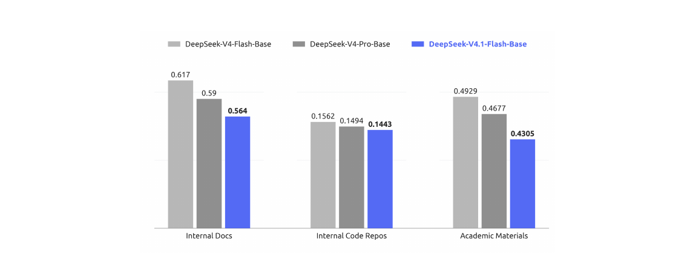
5 后训练
5.1 后训练流水线
在本次发布中,我们没有引入新的后训练算法。整体方案沿用标准范式:先做监督微调(SFT),再做强化学习(RL)和同策略蒸馏(OPD;Gu et al., 2024;Lu and Lab, 2025),除了业界已广泛采用的做法之外,没有做算法上的改动。我们的精力几乎全部放在模型“用什么来训练”上,而不是“如何优化”上:我们投入建设了大规模、自动化的数据合成与环境构建流水线。具体来说,这条流水线(i)合成多样且可验证的训练任务,并同时给出参考解和奖励信号;(ii)以程序化方式构建并扩展可交互的智能体环境,使轨迹能够以低成本采集和评估;(iii)进行严格的过滤、去重和难度校准,以保证数据质量和课程均衡。我们发现,在优化流程固定且平平无奇的前提下,合成数据与环境在规模、多样性和可验证性上的系统性提升,几乎解释了我们观察到的全部收益。这一观察呼应了一条更普遍的经验:在当前阶段,对数据与环境流水线做工程投入的边际回报,远高于在后训练中追求算法创新的边际回报。
5.1.1 大规模智能体任务合成
任务是智能体学习的基本燃料。然而,构建高质量的训练任务历来需要大量人工投入。我们观察到,模型已经开始表现出为自己构建训练任务的能力,尽管这种能力还远不完善。认识到这一潜力后,我们投入了相当多的精力来增强模型的任务构建能力和质量验证能力。
我们把每个任务形式化为一个三元组(问题、环境、验证系统),并从两个维度评估其质量:难度——确保任务不是轻而易举就能完成的;正确性——保证三个组成部分之间不存在关键缺陷。我们以难度和正确性作为奖励信号,迭代地训练模型构建更好的任务。我们还对 RL 任务的整个生命周期进行监控。每当一个任务被用于新的 RL 训练时,由此产生的轨迹都会为质量复审提供新的证据。在这一通用框架下,我们针对通用智能体和编码智能体这两个核心场景,分别搭建了专门的训练环境生产流水线。
通用智能体。对于通用智能体,我们鼓励内部员工和外部合作伙伴把我们最新的模型融入日常工作流,并在自愿的基础上回传交互数据和反馈。基于回传数据中观察到的接口,我们构建了大量模拟(mock)工具,复现真实世界工具和系统的接口与行为,包括它们的输入格式、输出结构、API schema 和行为约束,既覆盖常用的 SaaS 与企业应用,也覆盖更专门的业务后端系统。与此同时,我们大规模收集内部员工提交的负面反馈和模型失败案例,并把它们纳入流水线,生成扎根于真实工作流的单轮和多轮智能体环境。通过重建相关的工具上下文、用户交互模式和失败条件,这条流水线可以系统性地重放失败案例,并针对观察到的模型弱点做有针对性的强化学习。
编码智能体。编码智能体的训练环境有两个来源:1)来自内部员工和外部合作伙伴的编码智能体会话,经过筛选,只保留高度复杂的任务或模型表现较差的任务,然后按轨迹去重;2)star 数达到阈值的公开 GitHub 仓库。环境构建由多个专门的智能体协作完成。首先,一个智能体判断该项目能否在容器内构建并完整运行,以及能否被自动验证;如果可以,它会选取某一轮对话或某个 commit 作为任务起点,设计若干足够复杂的实现方向,并产出具体的评测点(包括 fail-to-pass 和 pass-to-pass 两类)以及一份构建报告,过程中按需从网上获取外部资源。接着,另一个智能体在隔离的容器中配置依赖、初始工作目录、测试代码和任务描述,进行自测,清除任何可能泄露任务解法的痕迹,并把环境打包为一个新的镜像层。然后,多个不同的智能体尝试解决该任务,一个独立的质检智能体结合这些解题智能体的轨迹对环境进行审查,检查环境问题、事实错误、评测点与任务描述不一致以及可被钻空子(hack)的风险。如果质检未通过,修复智能体会修正所有已发现的错误,调整过易或过难的评测点,然后任务重新进入验证环节。
通过这些流水线,我们可以自动、批量地生产正确、有区分度、且长度和难度可控的 RL 训练数据。无论是通用智能体环境中对真实工作流的忠实重建,还是编码智能体环境中对编码任务的精确构建,最终都汇入统一的训练系统,在持续的质量监控下推动模型能力的迭代提升。
5.1.2 在合成任务上进行 RL
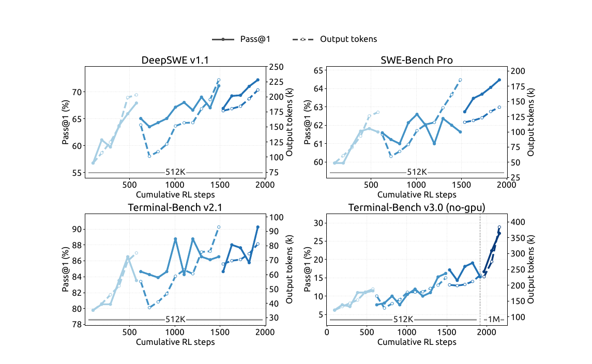
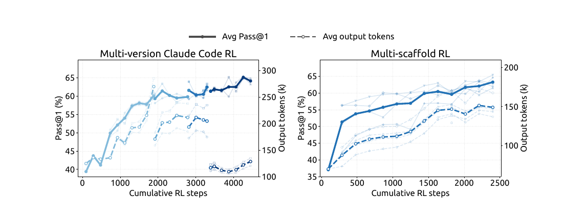
我们在合成任务上使用大规模异步 RL 来提升模型表现,并塑造它在复杂场景中的行为。我们从两个维度扩展 RL 训练,即训练算力和脚手架(scaffold)数量。如图 7 和图 8 所示,无论是在单个脚手架内扩展、在同一脚手架的多个变体上联合扩展,还是在异构脚手架之间扩展,随着算力和累计 RL 步数的增加,表现都在持续提升。
为了在多种脚手架上进行 RL 训练,我们把智能体 rollout 的执行解耦为一个智能体沙箱和一个 worker 容器。沙箱运行脚手架及其工具,而 worker 提供一个与脚手架无关的控制层,负责编排 rollout,把异构的交互归一化为统一的轨迹 schema,并与训练器通信。两者都运行在 DSec(第 5.1.3 节)上,位于可抢占的 GPU 训练池之外,从而把长时间存活的 rollout 与细粒度的训练调度分离开来。在训练器被抢占期间,rollout 的执行可以被挂起并卸载,同时保留其完整状态以便之后恢复,并释放 CPU 和 GPU 资源。这一设计使得我们无需修改底层算法,就能在异构脚手架上稳定、高效地进行 RL。
为了让有效的 RL 算力不受单次训练的限制,我们使用模型合并来重新初始化相继的 RL 训练。具体来说,我们把来自不同脚手架或不同配置的训练所得到的 checkpoint 合并起来,把沿不同优化路径获得的改进结合在一起。在图 7 和图 8 中,不相连的曲线段对应模型重新初始化之后的相继 RL 训练。这在任务表现和 token 效率两方面都带来了进一步的收益,为汇聚并行的 RL 算力、在相继的训练中持续扩展提供了一种简单实用的方法。
5.1.3 大规模运行智能体:DSec
在从 DeepSeek-V3 过渡到 V4 的过程中,智能体式训练环境的数量和多样性迅速增长,这促使我们构建了 DeepSeek Elastic Compute(DSec),一个面向大规模智能体式训练与评测的生产级沙箱平台。它最初的设计解决了异构执行环境、可扩展的镜像分发、多种隔离后端、高密度资源管理、命令轨迹日志以及抢占安全的恢复等问题。
V4.1 的训练进一步把需求提高到数百万个并发沙箱实例,涵盖各种 harness、平台、代码仓库、软件依赖和任务专属服务。在这一规模下,主要瓶颈转向了数据中心的可扩展性、工作负载隔离、单节点计算密度,以及如何遏制能力日益增强的智能体的不当行为。下面我们简要介绍关键的设计要点。
大规模水平扩展算力。DSec 通过两种互补的机制实现扩展:分片,以及放宽一致性的调度。为了容纳大量机器,我们把计算节点划分为多个分片(即所谓的 scale unit)。这种分片还能隔离来自不同实验的工作负载,从而缩小故障影响范围(blast radius),防止单个内存密集型任务耗尽与之无关的工作所共享的资源。
DSec 没有使用 Kubernetes 这类现成的编排器,而是采用自研的放置引擎来调度海量沙箱,以牺牲全局强一致性来换取可扩展性。这一设计基于一个关键观察:只要每个计算节点都强制执行本地的安全约束,智能体式沙箱的放置只需要最终一致性。为此,放置引擎以多个相互独立的副本部署,彼此之间没有同步协调。每个副本根据最近的测量值预测资源可用情况,并做出足够好的放置决策。为了弥补一致性上的损失,每个节点负责校验最终的放置决策,并执行一条硬性的准入约束:如果新的放置会使节点超过本地告警阈值,就予以拒绝。这套设计作为一个整体,使 DSec 能够扩展到数百万个容器,而不会在中心协调上形成瓶颈。
高密度运行沙箱。在节点层面,我们使用硬件支持的 sub-NUMA 分区,并把每个 worker VM 绑定到单独的 NUMA 域。容器运行在这些 worker VM 内部,其 CPU 和内存分配被限制在该 VM 本地的 NUMA 资源之内。这种配置在激进的内存超售与 Linux 内核锁竞争之间取得了平衡,同时把内存压力和运行时故障限制在局部。在可比的工作负载配置下,它把每个物理节点在出现可测量的端到端性能下降之前所能支持的并发存活容器密度,从大约 1,000 个提高到 2,500 个以上。
不过,这种高密度部署可能因后台工作负载的干扰而使对时间敏感的评测失真。因此 DSec 引入了延迟敏感(LS)执行类别。我们对非 LS 任务应用 SCHED_IDLE,把它们的调度优先级降到最低,并使用 core scheduling 确保只有相同优先级类别的任务才会同时在同一物理核的兄弟超线程上执行,从而消除干扰。
缓解智能体的不当行为。在 RL 训练期间,我们经常观察到智能体试图进行奖励作弊(reward hacking),或者无意中把环境搞崩溃。在某些尝试中,我们的智能体利用了新近披露的漏洞,包括 XFS 驱动的权限问题、AppArmor 中的非法内存访问、从软件包镜像服务中泄露答案等等。智能体还因删除关键二进制文件、破坏系统文件甚至删掉整个文件系统而臭名昭著。我们使用按沙箱配置的 AppArmor profile 和基于 eBPF 的细粒度网络策略来阻止这类尝试。如果智能体把自己的环境搞崩溃,我们会把这次崩溃视为一条失败的轨迹,并向 RL 框架上报一个 "repercussion"(后果)信号。
5.1.4 RL 中可控的推理强度
除了模型架构和硬件方面的进步之外,输出 token 的数量是决定服务成本的另一个关键因素,因而也决定了真实应用中成本与质量之间的权衡。因此,我们在强化学习期间引入一个标量强度等级 ,作为显式的条件信号。这一机制同时应用于单轮推理任务和多轮智能体式任务。具体来说,我们在系统提示词的开头加上如下指令:
Reasoning Effort: {effort} (range 1--100; higher values request more thorough reasoning)
这里, 表示所请求的强度等级。
对于每个训练提示 ,我们在每个强度等级 下采样 个回复:
| (8) |
这里, 是在强度等级 下采样的回复的下标。具有相同 的回复构成一个子组,奖励在子组内做均值中心化,以计算组内相对优势。因此,不同强度等级的回复之间不做直接比较。与强度相关的行为是通过让奖励中的长度分量依赖于 ,在每个子组内部诱导出来的。具体来说,我们在回复 的奖励中加入长度惩罚项 :
| (9) |
其中 是推理 token 的数量, 是参考长度, 为施加在一条轨迹上的最大扣分设定上限。token 惩罚系数随所请求的强度呈指数下降:
| (10) |
其中 是各强度等级下的基础惩罚系数, 是 中的最小值, 是训练所用强度等级之间的平均间隔, 控制惩罚衰减的速率。 每增加 ,惩罚系数就乘以 。参数 控制促使推理变短的总体压力,而较小的 会使惩罚衰减得更快,往往使不同强度等级之间的行为差异更大。附录 C 从边际效用的角度给出了对 采用指数参数化的动机。
在部署时,标量 为模型的推理强度提供了一个灵活的控制接口。通过改变 ,同一个模型 checkpoint 可以沿着学到的成本—质量前沿在不同的工作区间之间移动,以适应不同的延迟、token 预算和解答质量要求。尽管训练只使用了有限的一组强度等级,部署时仍可使用中间值来引出插值的推理行为,从而为测试时的资源分配提供一种细粒度且高效的机制。
在我们于 2026 年 9 月上线的生产部署中,公开 API 提供三个预设的推理强度档位——max、high 和 low——它们直接映射到这一标量接口。如表 2 所总结的,这三个档位分别对应强度值 、 和 ,因此 API 用户可以在学到的成本—质量前沿上选择一个工作点,而无需对模型权重或解码配置做任何改动。
表 2:公开 API 的推理强度档位与底层标量强度值 之间的映射。
| API 档位 | 强度值 |
|---|---|
| max | 100 |
| high | 75 |
| low | 50 |
5.2 异步后训练基础设施
LLM 的 RL 在 rollout 阶段的长尾问题,一直是训练效率的主要瓶颈。为了解决这个问题,我们扩展了后训练基础设施,使其支持异步生成样本(Zeng et al., 2026;Team et al., 2026b),通过维持足够高的并发度,显著缓解了 rollout 阶段的长尾问题。目前我们几乎所有的 RL 和 OPD 任务都启用了异步训练,rollout 效率得到了大幅提升。
5.2.1 整体工作流
我们把 rollout 和训练部署在同一批物理设备上,并让二者分时执行,从而无需手动调整两个阶段之间的资源分配。每个任务指定在途(in-flight)样本数量的上限,系统在整个 rollout 阶段都维持这一上限。
为了维持目标 rollout 并发度,我们评估了三种派发粒度。我们最终采用的是样本级派发:一旦新完成的样本数量达到分配给下一个提示的 GRPO 组大小,我们就派发该提示,而不管这些完成的样本来自哪些组。这有助于在整个训练过程中保持稳定的 rollout 并发度。在确定这一派发策略之前,我们尝试过另外两种派发粒度。第一次尝试中,我们在开始时额外派发若干个 batch,并在每次训练迭代之后补充一个完整的 batch;然而这导致训练指标剧烈振荡,说明 batch 级粒度过粗。第二次尝试中,我们改用提示级派发,即在一个 GRPO 组完成之后派发一个新的提示,但发现它很容易被 GRPO 组内的长尾样本卡住,难以平稳地维持目标 rollout 并发度。
一旦积累了足够的训练样本,训练就会抢占正在进行的 rollout。在训练期间,我们使用拼接式路由重放(concatenated routing-replay):对于跨越多个 checkpoint 的样本,我们把每个 rollout 片段产生的专家路由拼接起来,而不是丢弃路由信息并用新的 checkpoint 重新计算。
5.2.2 缓解长度偏差与离策略效应
异步生成虽然有效提升了 rollout 效率,但也带来了两个可能降低训练质量的副作用。第一,它会造成长度分布偏差,在训练早期尤其明显,因为较短的序列往往先完成,从而在最初的训练 batch 中占主导。第二,它不可避免地会产生离策略(off-policy)样本,即其 token 部分或全部由更早的 checkpoint 生成的样本。这两个问题需要不同的处理策略。
针对长度偏差,我们采用两种机制。第一,派发器可以按数据集限制并发度,这有助于调节每个数据集在稳态训练 batch 中的占比,通过控制流入样本的来源来间接缓解长度偏斜。第二,我们支持丢弃早期返回的短样本,以平滑地过渡到稳态长度分布,并防止模型对过短的序列过拟合。
针对离策略问题,我们另外实现了两种机制。第一,通过调整控制样本派发的逻辑和等待训练样本的条件,我们可以限制离策略比例的上界,确保训练数据不会过度偏离当前模型。第二,在训练期间,我们加入一种损失掩码方案,消除过于陈旧的 token 对损失的贡献,从而减轻陈旧样本对梯度更新的不利影响。
5.2.3 性能优化
在我们的异步 RL 框架中,rollout 阶段会被周期性地打断,以切换到更新后的策略 checkpoint。我们的目标是让这一过程做到无缝:打断应当近乎瞬时完成,被打断的 rollout 应当像从未停止过一样继续进行。
为了及时停止 rollout,我们支持 token 级中断:生成可以在任意 token 边界处停下。一旦收集到足够的训练数据,所有在途样本几乎立即停止,使系统可以毫无延迟地进入训练阶段。
为了在 checkpoint 切换前后保留 rollout 的进度,KV 缓存和专家路由等 rollout 状态在生成过程中以 token 粒度持久化。用新的 checkpoint 恢复时,这些持久化的状态被直接复用,省去了重新预填充的开销,使被打断的样本可以从中断处原样继续。由于这需要保留所有在途样本的状态,我们进行样本粒度的垃圾回收,每个样本一完成就释放它的状态。
除了 checkpoint 切换之外,同一套快速中断和无缝恢复机制还使训练作业能够及时响应集群调度的抢占信号而不丢失进度,从而提高了集群的整体利用率。
5.2.4 大规模同策略蒸馏
作为后训练的最后一个阶段,最终的全词表 OPD 任务使用 40 多个教师模型,在所有领域的数据集上进行训练。它同样采用异步生成来提升 rollout 效率。由于各领域的训练流程不同,每个领域的最佳教师可能来自模型研发的不同阶段。此外,这些教师模型在架构上可能彼此不同,也可能与学生模型不同。我们的后训练基础设施可以很方便地适应这种设定,支持使用数量几乎不受限制、架构异构的教师进行全词表 OPD,并以可忽略的代价在它们之间高效切换(DeepSeek-AI, 2026b)。
OPD 阶段还需要在训练过程中动态重新配置。我们持续跟踪模型的能力,并可能据此调整训练方案,包括数据集配比、按数据集设置的并发上限以及当前启用的教师。在同步训练中,这类变更很简单,因为 rollout batch 提供了明确的配置边界。但在异步设定下,在不同配置下生成的样本可能同时处于在途状态。我们的基础设施支持在配置之间进行一致的切换,而不会打断 rollout 或训练。
5.3 评测
5.3.1 评测设置
我们的后训练评测主要关注推理能力和智能体能力,而知识密集型任务上的表现主要由预训练决定,已在表 1 中报告。在推理方面,我们在 GPQA Diamond(Rein et al., 2023)、Humanity’s Last Exam(Phan et al., 2025)、Codeforces(内部基准)和 MathArena Apex(Dekoninck et al., 2025)上进行评测,temperature 和 top- 均设为 1.0。在智能体能力方面,我们的评测涵盖四个类别:
- • 代码智能体:Terminal-Bench 2.1(Merrill et al., 2026)、Terminal-Bench 3.0(Marten et al., 2026b)、Terminal-Bench 4.0(Marten et al., 2026a)、DeepSWE v1.1(DataCurve, 2026)、ProgramBench(Yang et al., 2026)、NL2Repo-Bench(Ding et al., 2025)。
- • 网络安全:SEC-Bench Pro 版本 260505(Lee et al., 2026)、CyberGym(Wang et al., 2026c)和 ExploitGym(Wang et al., 2026b)。
- • 通用智能体:AutomationBench v1.0.6 的公开评测集(Shepard and Salimans, 2026)、Agents’ Last Exam(Sun et al., 2026a)(ALE-CLI)。
- • 视觉智能体:Chartography(Garre et al., 2026)、BabyVision(Chen et al., 2026)、ZeroBench 的 main 集(Roberts et al., 2025)。
对于代码智能体,我们使用 DeepSeek Harness 的 Minimal 模式评测 DeepSeek-V4.1-Flash,上下文窗口为 1M token,temperature 设为 1.0,top-p 设为 0.95。为了与官方设置要求保持一致,我们在 DeepSWE v1.1 上采用 mini-SWE harness。对于 SEC-Bench Pro,我们使用 Claude Code harness,正是看中它的会话压缩(session compact)设计。对于视觉智能体任务,我们使用 Claude Code harness 进行评测,上下文窗口为 512k token,temperature 设为 1.0,top-p 设为 0.95。Agents’ Last Exam 和 AutomationBench 使用各自的官方脚手架进行评测。模型在其他编码脚手架上的表现见表 4。
为了在编码智能体评测中缓解奖励作弊,我们限制互联网访问,并从环境中去除 Git 历史。此外,我们会自动清除各种环境中的临时构建缓存和软件包缓存,包括 Go 模块缓存(go/mod)、node modules 依赖产物、编译好的 .jar 文件以及 Python 的 pycache 目录。尽管采取了这些预防措施,我们在测试中仍然观察到寻找可乘之机的行为——例如在 CyberGym 中反编译 Ubuntu Linux 的核心软件包以发现漏洞。随着模型能力越来越强,标准的评测基础设施(例如 Docker 容器和验证脚本)越来越容易被模型钻空子。我们呼吁更广泛的研究社区在设计下一代基准时,把检测和缓解这类行为放在优先位置。
5.3.2 评测结果
表 3:DeepSeek-V4.1-Flash 与闭源/开源模型的对比。 表示 HLE 的纯文本子集。最优结果以粗体标出,次优结果以下划线标出。
| 基准(指标) | Opus-5 | GPT-5.6 Sol | K3 | GLM-5.3 | DS-V4-Pro | DS-V4-Flash | DS-V4.1-Flash | +——–+————-+——+———+———–+————-+—————- | Max | Max | Max | Max | Max | Max | Max | ||||||||
| 推理 | GPQA Diamond (Pass@1) | 93.4 | 94.1 | 92.9 | 88.1 | 92.4 | 89.9 | 90.9 |
| HLE (Pass@1) | 56.3 | 44.5 | 43.5 | 42.0† | 42.7† | 37.8† | 36.8 (39.1†) | |
| Codeforces (Rating) | 3348 | 3289 | 3471 | |||||
| MathArena Apex (Pass@1) | 65.6 | 65.3 | 58.6 | 65.6 | ||||
| 智能体 | Terminal-Bench 2.1 (Pass@1) | 89.1 | 88.8 | 88.3 | 88.2 | 87.9 | 82.7 | 90.6 |
| Terminal-Bench 3.0 (Pass@1) | 43.3 | 34.4 | 17.7 | 28.3 | 11.8 | 7.6 | 30.0 | |
| Terminal-Bench 4.0 (Pass@1) | 51.8 | 39.9 | 12.6 | 37.9 | 12.4 | 7.0 | 31.2 | |
| DeepSWE v1.1 (Resolved) | 74.0 | 73.0 | 67.5 | 66.9 | 62.7 | 54.4 | 74.2 | |
| ProgramBench (Almost@1) | 37.0 | 23.0 | 17.5 | 19.0 | 15.5 | 20.3 | ||
| NL2Repo-Bench (Score) | 75.3 | 56.8 | 58.0 | 58.0 | 61.5 | 54.2 | 65.4 | |
| CyberGym (Pass@1) | 84.5 | 80.0 | 84.5 | 83.3 | 76.7 | 88.1 | ||
| SEC-Bench Pro (Pass@1) | 74.3 | 56.4 | 30.9 | 62.8 | ||||
| ExploitGym (Pass@1) | 22.1 | 33.7 | 15.0 | 5.4 | 1.8 | 15.3 | ||
| HLE w/ tools (Pass@1) | 63.6 | 59.8 | 62.5 | 60.0 | 51.5 | 63.9 | ||
| Automation-Bench (Pass@1) | 50.3 | 45.8 | 46.7 | 48.8 | 43.2 | 37.7 | 54.8 | |
| Agents’ Last Exam(Pass@1) | 28.6 | 26.7 | 27.6 | 28.5 | 25.7 | 25.2 | 31.8 | |
| Chartography w/ tools (Pass@1) | 84.0 | 79.9 | 68.1 | 78.9 | ||||
| BabyVision w/ tools (Pass@1) | 94.1 | 88.9 | 85.7 | 89.6 | ||||
| ZeroBench-main w/ tools (Pass@5) | 52.0 | 53.0 | 41.0 | 49.0 | ||||
如表 3 所示,与上一代 DeepSeek-V4-Flash 相比,DeepSeek-V4.1-Flash 在推理基准和智能体基准上都有显著提升,同时达到或超过了顶级开源模型和闭源模型的水平。
在核心推理任务上,DeepSeek-V4.1-Flash 的 Codeforces rating 达到 3471,超过了 DeepSeek-V4-Flash(3289)和 DeepSeek-V4-Pro(3348)。在 MathArena Apex 上,它取得了 65.6% 的 Pass@1 准确率,与表现最好的开源基线 Kimi-K3(65.6%)完全持平,也与 DeepSeek-V4-Pro(65.3%)相当。此外,它的 GPQA Diamond 得分达到 90.9%,相对 DeepSeek-V4-Flash(89.9%)稳步提升。
在智能体任务上,性能提升更为明显。值得注意的是,在 DeepSWE v1.1 上,DeepSeek-V4.1-Flash 的通过率达到 74.2%,相比 DeepSeek-V4-Flash(54.4%)有大幅跃升,并超过了包括 Opus-5(74.0%)和 GPT-5.6 Sol(73.0%)在内的领先闭源模型。在 Terminal-Bench 2.1 上,它达到 90.6%,优于 Opus-5(89.1%)和 GLM-5.3(88.2%)。类似地,在 Automation-Bench(54.8%)和 Agents’ Last Exam(31.8%)上,DeepSeek-V4.1-Flash 的得分同时领先于开源同类模型和顶级闭源系统。尽管体量紧凑,DeepSeek-V4.1-Flash 仍展现出最先进的智能体能力,大幅缩小了与前沿闭源模型之间的差距,同时在开源模型中确立了明显的优势。
在网络安全任务上,DeepSeek-V4.1-Flash 在开源模型中创造了新的最佳水平。鉴于这类能力具有两用性质,我们鼓励社区负责任地使用它们,例如用于防御性安全研究和漏洞修复。在视觉智能体任务领域,DeepSeek-V4.1-Flash 展现出稳健的能力,尤其是在需要视觉推理和分析复杂专业图表的场景中。虽然它优于领先的开源模型 Kimi-K3,但我们承认,与领先的闭源模型相比,仍然存在可测量的差距。
除了峰值性能之外,DeepSeek-V4.1-Flash 还提供了推理强度设置,使用户能够以可控的方式用推理成本换取准确率。如图 9 所示,无论在推理基准还是智能体基准上,准确率和输出长度都随强度等级稳步增加。把强度从 25 提高到 100,八个推理密集型基准上的平均 Pass@1 从 67.1% 提高到 76.3%,DeepSWE v1.1 上从 66.0% 提高到 74.2%,Terminal-Bench 2.1 上从 82.4% 提高到 90.6%,代价是输出 token 增加到大约 。值得注意的是,在单次回复的推理任务上学到的强度控制,可以忠实地迁移到长程的智能体式轨迹上,在那里它支配着跨多轮的探索和验证的总量。收益主要集中在前段:60–80 这一区间已经能够以不到最大设置一半的 token 预算,取得最大设置的大部分准确率;而最后一步提高到强度 100,会使智能体轨迹变长 –,却只带来微小的提升。因此,最高档位最好留给最具挑战性的任务,而中等强度等级则为日常的智能体式使用提供了良好的成本—性能平衡。
5.3.3 不同推理强度下的表现
图 9 报告了一系列预算值下的表现和平均回复长度。随着推理强度的提高,模型产生的推理过程逐渐变长,在推理密集型基准和软件工程任务上的准确率单调提升,其中最大的收益集中在中低预算区间,此后收益递减。尽管我们的 RL 只涉及有限数量的强度等级,但使用标量强度可以在一定范围内对回复长度实现灵活的、插值式的控制。这使得实践者可以沿着一条平滑的连续谱在质量与延迟、token 成本之间做权衡:对延迟敏感的应用可以在低强度下运行,准确率只有小幅下降;而困难的任务可以调用高强度,以发挥模型完整的推理能力。在我们的公开 API 服务中,我们提供三个映射到这一标度上的预设强度等级:low、high 和 max 分别对应强度值 50、75 和 100。
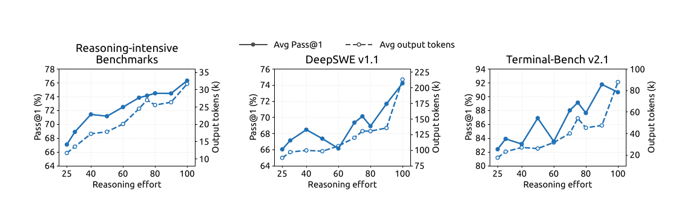
5.3.4 不同智能体脚手架下的表现
在实践中,模型很少只部署在单一固定的智能体框架中;不同的脚手架在系统提示词、工具定义、上下文管理策略和交互协议上各不相同,对某一特定 harness 过拟合的模型,换到另一个 harness 中时可能大幅退化。为了评估我们的模型对这类变化的鲁棒性,我们的对比覆盖了来自六个脚手架家族的八种配置:Claude Code(Anthropic, 2026)、Codex(OpenAI, 2026)、OpenCode(Anomaly, 2026)、Pi(Zechner, 2026)、mini-SWE(Yang et al., 2024),以及 Minimal、Standard 和 PTC 模式下的 DeepSeek Harness(DSH)(DeepSeek-AI, 2026a)。对于每个脚手架,我们保持模型 checkpoint、解码配置和任务集完全相同,只改变外围的 harness,包括其原生的系统提示词、工具 schema 和轮次交替逻辑。表 4 报告了在 Max 推理强度(100)下 DeepSWE v1.1 和 Terminal-Bench v2.1 上的表现。
表 4:Max 推理强度下不同智能体脚手架的表现。
| 基准(指标) | Claude Code | Codex | OpenCode | Pi | mini-SWE | DeepSeek Harness | | ||||||||
| Minimal | Standard | PTC | ||||||
| DeepSWE v1.1 (Resolved) | 69.8 | 65.6 | 65.5 | 66.2 | 74.2 | 72.6 | 70.5 | 67.6 |
| Terminal-Bench v2.1 (Pass@1) | 88.0 | 84.1 | 85.0 | 86.1 | 90.3 | 90.6 | 85.8 | 85.8 |
注。所有脚手架在 DeepSWE v1.1 上每个任务使用 个样本,在 Terminal-Bench v2.1 上使用 个。两个基准上的运行均使用 Linux 容器、temperature 1.0、top-p 0.95、1M token 的上下文窗口,以及每个智能体 max_steps=500 轮模型生成。Terminal-Bench v2.1 在无网络访问的条件下评测。我们评测了四个 Claude Code 版本,各版本的结果及其平均值见附录表 5;本表报告的是 v2.1.251。更多与脚手架相关的配置详见附录 B.1。
模型的智能体能力可以很好地迁移到提示词和工具接口各不相同的脚手架家族上,而不依赖某个特定 harness 所特有的约定。当外围的交互协议和工具抽象发生变化时,它的表现依然稳健,这表明其智能体行为并没有与单一的脚手架设计紧密耦合。这种鲁棒性与我们合成训练数据(第 5 节)中环境、工具 schema 和交互格式的多样性是一致的,这些数据的设计初衷正是鼓励模型在不同智能体脚手架之间泛化。
5.3.5 多智能体
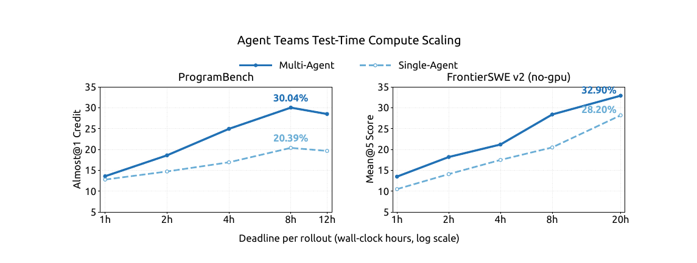
为了探索多智能体在复杂任务上的协作,我们使用 DeepSeek Harness 的 Agent Team 模式,对 DeepSeek-V4.1-Flash 进行了初步实验。
多智能体 Harness。我们使用 Agent Team 模式下的 DeepSeek Harness,其中主导(lead)智能体默认可以通过 spawn_teammate 异步创建具名的、持久存在的队友。每个队友接收一个被委派的任务,并以两种模式之一启动:不带主导智能体历史的 fresh 模式,或带有主导智能体已完成轮次的一次性快照的 fork 模式。所有智能体共享同一份仓库检出,因此各自的修改对彼此立即可见。
智能体通过一个持久化的对等邮箱进行通信。通过 send_message 发送的消息,对正在运行的队友会在其下一个步骤边界处送达,对空闲的队友会开启一个新的轮次,对不活跃的队友则会将其唤醒恢复。在每个队友的任务生命周期中,主导智能体用 list_agents 监控运行状态,并用 wait_agent 等待状态、邮箱或共享任务的变化。任务归属、依赖关系和建议性的写入范围在一个共享任务看板上维护(使用四个 team_task_* 工具,更新时带有修订版本检查)。需要干预时,只有主导智能体可以通过 interrupt_agent 打断队友当前的轮次。所需工作完成后,主导智能体对合并后的改动进行审查和测试,并给出最终回复。
训练。我们用一个 RL 奖励来训练 Agent Team 模式,该奖励由三部分组成:任务表现、鼓励委派和智能体间通信的协作奖励,以及促进高效协调的推导延迟(derived-latency)惩罚。推导延迟的计算方式是:把执行事件及其协作依赖关系表示为一个有向无环图(DAG),按固定的预填充/解码速率由 token 数量折算成本,再加上实测的工具执行时间,然后取关键路径的长度。这样可以鼓励有益的并行,同时惩罚不必要的串行工作和同步,并且对服务侧的 batch 合并和排队延迟不那么敏感。
表现。我们构建了 ProgramBench(Yang et al., 2026)的一个高置信度子集,只保留参考解在隐藏测试集上通过率至少为 95% 的任务。经过这一筛选,剩下 172 个 "golden" 任务。我们还在 FrontierSWE v2(Kondra et al., 2026)上进行评测,它是 FrontierSWE 的后继版本,规模更大、难度更高,并采用了大幅改进的方法论。我们从当前公开的任务中剔除需要 GPU 的任务,构建了一个无 GPU 子集。我们在两个基准上都以明确的每次 rollout 挂钟时间期限来评测单智能体和多智能体配置。这里报告的结果是初步的:我们把观察到的最强多智能体配置与现有的最强单智能体基线进行比较。在 ProgramBench 上,我们对每个任务最多运行三次 rollout,对应每种配置计划运行 516 次 rollout。我们报告 Almost@1,它衡量得分至少为 0.95 的单次 rollout 所占的比例。在 FrontierSWE v2 上,我们报告 Mean@5。ProgramBench 的期限从 1 小时到 12 小时不等,而 FrontierSWE v2 的评测期限从 1 小时到 20 小时不等。在每个期限下,指标都根据期限到达时已有的输出来计算。
如图 10 所示,在两个基准的每一个期限下,多智能体配置都优于对应的单智能体配置。在 ProgramBench 上,多智能体配置的 Almost@1 从 1 小时的 13.59% 提高到 8 小时的峰值 30.04%,而单智能体配置对应的数值为 12.79% 和 20.39%。在 FrontierSWE v2 上,多智能体配置的 Mean@5 从 1 小时的 13.50% 提高到 20 小时的 32.90%,而单智能体配置则从 10.50% 提高到 28.20%。
6 结论、局限与未来方向
在本工作中,我们介绍了 DeepSeek-V4.1-Flash,一个支持最长一百万 token 上下文的多模态混合专家(MoE)模型。通过对模型架构、缓存精度和部署策略的联合优化,DeepSeek-V4.1-Flash 把 KV 缓存压缩推向了极限。它的因果编码器-解码器(CED)架构使模型在预填充阶段每个 token 只激活 8B 参数,而解码阶段为 16B,从而提高了输入密集的智能体式工作负载的成本效率。在序列长度相同的情况下,压缩稀疏注意力 2(CSA2)中的跨层 KV 缓存复用和 FP4 KV 缓存,把它的全局 KV 缓存占用(始终位于 HBM 中)降低到每 token 890 字节,大约是 DeepSeek-V4-Flash 相应占用的 1/4。SWA 有界重放进一步把它的持久化 KV 缓存占用(始终位于 SSD 或主机内存中)降低到 DeepSeek-V4-Flash 的大约 1/8。这些缩减缓解了 HBM 和 SSD 的容量压力,与此同时,模型的整体表现大幅优于 DeepSeek-V4-Flash。尽管参数规模明显小于 GLM-5.3 和 Kimi-K3 等同期开源模型,DeepSeek-V4.1 在各项关键基准上仍取得了与之相当——在若干任务上甚至更优——的表现。
尽管相对于 DeepSeek-V4-Flash,DeepSeek-V4.1-Flash 大幅简化了若干架构组件,但新引入的架构改动也带来了尚未被充分刻画的鲁棒性边界。我们的内部评测覆盖了多种多样的测试用例和边界条件,在已评测的设定下,我们没有观察到模型能力出现任何系统性退化。然而,任何有限的测试集都无法覆盖所有极端输入和部署条件。CSA2 中潜在的选择错误,以及 SWA 有界重放中的近似状态重建,仍可能在未经测试的边界情况下导致能力退化。今后,我们将继续扩充压力测试和评测体系,尤其关注长上下文上的稀疏检索,以及缓存恢复边界处的 SWA 状态重建。我们还将监控真实世界的工作负载,系统性地刻画潜在的失效模式和鲁棒性边界,并进一步提升模型在极端条件下的鲁棒性。
随着 AI 模型达到令人瞩目的性能水平,标准评测基准已日趋饱和。虽然 DeepSeek-V4.1-Flash 的表现已十分接近 Fable-5 和 GPT-6 Astra 等顶级模型——在日常应用中提供高度可比的用户体验——但在最具挑战性的任务上仍然存在性能差距。尽管基准分数显示出的差距很小,这种接近并不意味着模型在复杂、高难度的推理和边缘情况上达到了领先闭源系统的前沿能力。
因此,我们将持续更新评测方案,以确保对最先进的推理边界进行严格评估。在继续努力降低模型成本的同时,我们相信,模型智能的进一步提升将取决于数据、模型容量和 RL 的协同扩展。以 DeepSeek-V4.1-Flash 为新的起点,我们将继续探索模型能力的极限,并系统性地解决大规模数据合成和 RL 扩展中的关键挑战。我们还将积极引入模型与 harness 的协同设计,使这一联合系统能够共同演进、共同优化。通过同步推进成本降低和能力扩展,我们希望让高能力的智能体更易获得、更易部署,进一步降低更广泛的行业和场景采用 AI 技术的门槛。
参考文献
- Ainslie et al. (2023) J. Ainslie, J. Lee-Thorp, M. de Jong, Y. Zemlyanskiy, F. Lebrón, and S. Sanghai GQA: training generalized multi-query transformer models from multi-head checkpoints. arXiv preprint arXiv:2305.13245. Cited by: §2.3.
- Alvarez et al. (2025) E. Alvarez, O. Almog, E. Chung, S. Layton, D. Stosic, R. Krashinsky, and K. Aubrey Introducing nvfp4 for efficient and accurate low-precision inference. External Links: Link Cited by: §2.4.4.
- Anomaly (2026) Anomaly OpenCode. Note: https://github.com/anomalyco/opencode Cited by: §5.3.4.
- Anthropic (2026) Anthropic Claude code. Note: https://code.claude.com/docs/en/overview Cited by: §5.3.4.
- Bai et al. (2026) Y. Bai, Q. Dong, T. Jiang, X. Lv, Z. Du, A. Zeng, J. Tang, and J. Li IndexCache: accelerating sparse attention via cross-layer index reuse. arXiv preprint arXiv:2603.12201. Cited by: §2.3.
- Bai et al. (2025) Y. Bai, S. Tu, J. Zhang, H. Peng, X. Wang, X. Lv, S. Cao, J. Xu, L. Hou, Y. Dong, et al. Longbench v2: towards deeper understanding and reasoning on realistic long-context multitasks. In Proceedings of the 63rd Annual Meeting of the Association for Computational Linguistics (Volume 1: Long Papers), pp. 3639–3664. Cited by: §4.3.1.
- Brandon et al. (2024) W. Brandon, M. Mishra, A. Nrusimha, R. Panda, and J. Ragan-Kelley Reducing transformer key-value cache size with cross-layer attention. In Advances in Neural Information Processing Systems, A. Globerson, L. Mackey, D. Belgrave, A. Fan, U. Paquet, J. Tomczak, and C. Zhang (Eds.), Vol. 37, pp. 86927–86957. External Links: Document, Link Cited by: §2.3.
- Chen et al. (2026) L. Chen, W. Xie, Y. Liang, H. He, H. Zhao, Z. Yang, Z. Huang, H. Wu, H. Lu, Y. Bao, et al. Babyvision: visual reasoning beyond language. arXiv preprint arXiv:2601.06521. Cited by: 4th item.
- Chen et al. (2025) L. Chen, D. Xu, C. An, X. Wang, Y. Zhang, J. Chen, Z. Liang, F. Wei, J. Liang, Y. Xiao, et al. PowerAttention: exponentially scaling of receptive fields for effective sparse attention. arXiv preprint arXiv:2503.03588. Cited by: §2.2.
- Chen et al. (2021) M. Chen, J. Tworek, H. Jun, Q. Yuan, H. P. de Oliveira Pinto, J. Kaplan, H. Edwards, Y. Burda, N. Joseph, G. Brockman, A. Ray, R. Puri, G. Krueger, M. Petrov, H. Khlaaf, G. Sastry, P. Mishkin, B. Chan, S. Gray, N. Ryder, M. Pavlov, A. Power, L. Kaiser, M. Bavarian, C. Winter, P. Tillet, F. P. Such, D. Cummings, M. Plappert, F. Chantzis, E. Barnes, A. Herbert-Voss, W. H. Guss, A. Nichol, A. Paino, N. Tezak, J. Tang, I. Babuschkin, S. Balaji, S. Jain, W. Saunders, C. Hesse, A. N. Carr, J. Leike, J. Achiam, V. Misra, E. Morikawa, A. Radford, M. Knight, M. Brundage, M. Murati, K. Mayer, P. Welinder, B. McGrew, D. Amodei, S. McCandlish, I. Sutskever, and W. Zaremba Evaluating large language models trained on code. CoRR abs/2107.03374. External Links: Link, 2107.03374 Cited by: §4.3.1.
- Cheng et al. (2026a) X. Cheng, X. Yu, C. Shao, J. Li, Y. Xiong, Y. Qian, J. Zhu, S. Ma, X. Zhang, J. Ye, et al. DSpark: confidence-scheduled speculative decoding with semi-autoregressive generation. arXiv preprint arXiv:2607.05147. Cited by: §1, §2.1, §2.4.3.
- Cheng et al. (2026b) X. Cheng, W. Zeng, D. Dai, Q. Chen, B. Wang, Z. Xie, K. Huang, X. Yu, Z. Hao, Y. Li, H. Zhang, H. Zhang, D. Zhao, and W. Liang Conditional memory via scalable lookup: A new axis of sparsity for large language models. CoRR abs/2601.07372. External Links: Link, Document, 2601.07372 Cited by: §1, §2.1, §4.2.2.
- Cheng et al. (2026c) X. Cheng, W. Zeng, D. Dai, Q. Chen, B. Wang, Z. Xie, K. Huang, X. Yu, Z. Hao, H. Zhang, et al. Conditional memory via scalable lookup: a new axis of sparsity for large language models. In Proceedings of the 64th Annual Meeting of the Association for Computational Linguistics (Volume 1: Long Papers), pp. 4968–4990. Cited by: §2.4.2.
- Cobbe et al. (2021) K. Cobbe, V. Kosaraju, M. Bavarian, M. Chen, H. Jun, L. Kaiser, M. Plappert, J. Tworek, J. Hilton, R. Nakano, et al. Training verifiers to solve math word problems. arXiv preprint arXiv:2110.14168. Cited by: §4.3.1.
- Dai et al. (2024) D. Dai, C. Deng, C. Zhao, R. X. Xu, H. Gao, D. Chen, J. Li, W. Zeng, X. Yu, Y. Wu, Z. Xie, Y. K. Li, P. Huang, F. Luo, C. Ruan, Z. Sui, and W. Liang DeepSeekMoE: towards ultimate expert specialization in mixture-of-experts language models. CoRR abs/2401.06066. External Links: Link Cited by: §2.1.
- DataCurve (2026) DataCurve DeepSWE v1.1. External Links: Link Cited by: 2nd item, 1st item.
- DeepSeek-AI (2024a) DeepSeek-AI DeepSeek-v2: A strong, economical, and efficient mixture-of-experts language model. CoRR abs/2405.04434. External Links: Link Cited by: §2.3.
- DeepSeek-AI (2024b) DeepSeek-AI DeepSeek-v3 technical report. CoRR abs/2412.19437. External Links: Link Cited by: §2.4.3.
- DeepSeek-AI (2025) DeepSeek-AI DeepSeek-v3.2: pushing the frontier of open large language models. External Links: 2512.02556, Link Cited by: §1.
- DeepSeek-AI (2026a) DeepSeek-AI DeepSeek harness: everything is a plugin. GitHub. Note: https://github.com/deepseek-ai/deepseek-harness Cited by: §5.3.4.
- DeepSeek-AI (2026b) DeepSeek-AI DeepSeek-v4: towards highly efficient million-token context intelligence. CoRR abs/2606.19348. External Links: Link Cited by: §1, §1, §1, §2.3, §5.2.4.
- Dekoninck et al. (2025) J. Dekoninck, N. Jovanović, I. Petrov, and M. Vechev MathArena apex: unconquered final-answer problems. External Links: Link Cited by: §5.3.1.
- Deng et al. (2026) S. Deng, Z. Ouyang, T. Pang, Z. Liu, R. Jin, S. Yu, and Y. Yang RMNP: row-momentum normalized preconditioning for scalable matrix-based optimization. arXiv preprint arXiv:2603.20527. Cited by: §2.5.
- Ding et al. (2025) J. Ding, S. Long, C. Pu, H. Zhou, H. Gao, X. Gao, C. He, Y. Hou, F. Hu, Z. Li, et al. Nl2repo-bench: towards long-horizon repository generation evaluation of coding agents. arXiv preprint arXiv:2512.12730. Cited by: 1st item.
- Dosovitskiy et al. (2021) A. Dosovitskiy, L. Beyer, A. Kolesnikov, D. Weissenborn, X. Zhai, T. Unterthiner, M. Dehghani, M. Minderer, G. Heigold, S. Gelly, J. Uszkoreit, and N. Houlsby An image is worth 16x16 words: transformers for image recognition at scale. In International Conference on Learning Representations, External Links: Link Cited by: §2.1.1.
- Du et al. (2025) X. Du, Y. Yao, K. Ma, B. Wang, T. Zheng, K. Zhu, M. Liu, Y. Liang, X. Jin, Z. Wei, et al. Supergpqa: scaling llm evaluation across 285 graduate disciplines. arXiv preprint arXiv:2502.14739. Cited by: §4.3.1.
- Dua et al. (2019) D. Dua, Y. Wang, P. Dasigi, G. Stanovsky, S. Singh, and M. Gardner DROP: A reading comprehension benchmark requiring discrete reasoning over paragraphs. In Proceedings of the 2019 Conference of the North American Chapter of the Association for Computational Linguistics: Human Language Technologies, NAACL-HLT 2019, Minneapolis, MN, USA, June 2-7, 2019, Volume 1 (Long and Short Papers), J. Burstein, C. Doran, and T. Solorio (Eds.), pp. 2368–2378. External Links: Link, Document Cited by: §4.3.1.
- Gao et al. (2026) Y. Gao, J. Wei, Q. Zhang, Y. Cheng, S. Chen, Z. Tang, Z. Jiang, Y. Song, H. Zhang, L. Zhao, B. Yang, G. Wang, S. Cao, and F. Luo HySparse: a hybrid sparse attention architecture with oracle token selection and kv cache sharing. arXiv preprint arXiv:2602.03560. Cited by: §2.3.
- Garre et al. (2026) S. Garre, C. Mutty, S. Mehta, and E. Chen Chartography: a benchmark for professional chart understanding. arXiv preprint arXiv:2608.10677. Cited by: 4th item.
- Glentis et al. (2025) A. Glentis, J. Li, A. Han, and M. Hong Memory-efficient llm pretraining via minimalist optimizer design. arXiv preprint arXiv:2506.16659. Cited by: §2.5.
- Gu et al. (2024) Y. Gu, L. Dong, F. Wei, and M. Huang MiniLLM: knowledge distillation of large language models. In The Twelfth International Conference on Learning Representations, Cited by: §5.1.
- Haas et al. (2025) L. Haas, G. Yona, G. D’Antonio, S. Goldshtein, and D. Das Simpleqa verified: a reliable factuality benchmark to measure parametric knowledge. arXiv preprint arXiv:2509.07968. Cited by: §4.3.1.
- Hendrycks et al. (2021) D. Hendrycks, C. Burns, S. Kadavath, A. Arora, S. Basart, E. Tang, D. Song, and J. Steinhardt Measuring mathematical problem solving with the math dataset. arXiv preprint arXiv:2103.03874. Cited by: §4.3.1.
- Huang et al. (2023) Y. Huang, Y. Bai, Z. Zhu, J. Zhang, J. Zhang, T. Su, J. Liu, C. Lv, Y. Zhang, J. Lei, et al. C-Eval: a multi-level multi-discipline chinese evaluation suite for foundation models. arXiv preprint arXiv:2305.08322. Cited by: §4.3.1.
- Hupkes and Bogoychev (2025) D. Hupkes and N. Bogoychev MultiLoKo: a multilingual local knowledge benchmark for llms spanning 31 languages. CoRR abs/2504.10356. External Links: Link, Document Cited by: §4.3.1.
- Jacob et al. (2018) B. Jacob, S. Kligys, B. Chen, M. Zhu, M. Tang, A. Howard, H. Adam, and D. Kalenichenko Quantization and training of neural networks for efficient integer-arithmetic-only inference. In Proceedings of the IEEE Conference on Computer Vision and Pattern Recognition (CVPR), Cited by: §2.4.4.
- Jordan et al. (2024) K. Jordan, Y. Jin, V. Boza, J. You, F. Cesista, L. Newhouse, and J. Bernstein Muon: an optimizer for hidden layers in neural networks. Cited on, pp. 10. Cited by: §2.5, §4.2.2.
- Kazemi et al. (2025) M. Kazemi, B. Fatemi, H. Bansal, J. Palowitch, C. Anastasiou, S. V. Mehta, L. K. Jain, V. Aglietti, D. Jindal, Y. P. Chen, et al. Big-bench extra hard. In Proceedings of the 63rd Annual Meeting of the Association for Computational Linguistics (Volume 1: Long Papers), pp. 26473–26501. Cited by: §4.3.1.
- Kazemzadeh et al. (2014) S. Kazemzadeh, V. Ordonez, M. Matten, and T. Berg Referitgame: referring to objects in photographs of natural scenes. In Proceedings of the 2014 conference on empirical methods in natural language processing (EMNLP), pp. 787–798. Cited by: §4.3.1.
- Kondra et al. (2026) R. Kondra, S. Mhatre, A. Kumar, E. Chu, B. B. Ahmad, A. Nangia, R. Agarwal, A. Dasgupta, A. Sinha, B. Sridharan, K. Dave, B. Graham, G. Song, A. Rahul, W. H. Lim, A. Thangamuthu, R. Singh, D. Liu, N. Pour, C. Chen, and J. Mattern FrontierSWE v2. Proximal Blog. Note: https://frontierswe.com/blog/v2 Cited by: §5.3.5.
- Lee et al. (2026) H. Lee, J. Liu, D. Kim, W. Xia, Z. Zhang, C. S. Xia, and L. Zhang SEC-bench pro: can language models solve long-horizon software security tasks?. arXiv preprint arXiv:2605.26548. Cited by: 2nd item.
- Li and Liu (2025) J. Li and S. Liu FlashMLA: efficient multi-head latent attention kernels. GitHub. Note: https://github.com/deepseek-ai/FlashMLA Cited by: §3.2.
- Liu et al. (2025) J. Liu, J. Su, X. Yao, Z. Jiang, G. Lai, Y. Du, Y. Qin, W. Xu, E. Lu, J. Yan, Y. Chen, H. Zheng, Y. Liu, S. Liu, B. Yin, W. He, H. Zhu, Y. Wang, J. Wang, M. Dong, Z. Zhang, Y. Kang, H. Zhang, X. Xu, Y. Zhang, Y. Wu, X. Zhou, and Z. Yang Muon is scalable for LLM training. CoRR abs/2502.16982. External Links: Link Cited by: §2.5, §2.5, §4.2.2.
- Loshchilov and Hutter (2019) I. Loshchilov and F. Hutter Decoupled weight decay regularization. In International Conference on Learning Representations, External Links: Link Cited by: §2.5, §4.2.2.
- Lu and Lab (2025) K. Lu and T. M. Lab On-policy distillation. Thinking Machines Lab: Connectionism. Note: https://thinkingmachines.ai/blog/on-policy-distillation External Links: Document Cited by: §5.1.
- Mao et al. (2016) J. Mao, J. Huang, A. Toshev, O. Camburu, A. L. Yuille, and K. Murphy Generation and comprehension of unambiguous object descriptions. In Proceedings of the IEEE conference on computer vision and pattern recognition, pp. 11–20. Cited by: §4.3.1.
- Marafioti et al. (2025) A. Marafioti, O. Zohar, M. Farré, M. Noyan, E. Bakouch, P. Cuenca, C. Zakka, L. B. Allal, A. Lozhkov, N. Tazi, V. Srivastav, J. Lochner, H. Larcher, M. Morlon, L. Tunstall, L. von Werra, and T. Wolf SmolVLM: redefining small and efficient multimodal models. arXiv preprint arXiv:2504.05299. Cited by: §4.1.
- Marten et al. (2026a) Terminal-Bench External Links: Document, Link Cited by: 2nd item, 1st item.
- Marten et al. (2026b) R. Marten, A. Shaw, A. Konwinski, and Terminal-Bench Contributors Terminal-bench 3.0: harder tasks for better agents. Note: https://www.tbench.ai/news/terminal-bench-3-0An Open Benchmark for Agent Work in Terminal Environments Cited by: 1st item.
- Mathew et al. (2021) M. Mathew, D. Karatzas, and C. Jawahar Docvqa: a dataset for vqa on document images. In 2021 IEEE Winter Conference on Applications of Computer Vision (WACV), pp. 2199–2208. Cited by: §4.3.1.
- Merrill et al. (2026) M. A. Merrill, A. G. Shaw, N. Carlini, B. Li, H. Raj, I. Bercovich, L. Shi, J. Y. Shin, T. Walshe, E. K. Buchanan, et al. Terminal-bench: benchmarking agents on hard, realistic tasks in command line interfaces. arXiv preprint arXiv:2601.11868. Cited by: 2nd item, 1st item.
- Nagaraja et al. (2016) V. K. Nagaraja, V. I. Morariu, and L. S. Davis Modeling context between objects for referring expression understanding. In European conference on computer vision, pp. 792–807. Cited by: §4.3.1.
- Nesterov (1983) Y. Nesterov A method of solving a convex programming problem with convergence rate . Soviet Mathematics Doklady 27, pp. 372–376. Cited by: §2.5.
- OpenAI (2025) OpenAI Gpt-oss-120b & gpt-oss-20b model card. CoRR abs/2508.10925. External Links: Link, Document Cited by: §4.2.1.
- OpenAI (2026) OpenAI Codex. Note: https://github.com/openai/codex Cited by: §5.3.4.
- Phan et al. (2025) L. Phan, A. Gatti, Z. Han, N. Li, J. Hu, H. Zhang, C. B. C. Zhang, M. Shaaban, J. Ling, S. Shi, et al. Humanity’s last exam. arXiv preprint arXiv:2501.14249. Cited by: §5.3.1.
- Qian et al. (2026) Y. Qian, S. Liu, and Y. Li DeepSelect: high-performance topk kernels for deepseek sparse attention and sampling. GitHub. Note: https://github.com/deepseek-ai/DeepSelect Cited by: §3.2.
- Rein et al. (2023) D. Rein, B. L. Hou, A. C. Stickland, J. Petty, R. Y. Pang, J. Dirani, J. Michael, and S. R. Bowman GPQA: a graduate-level google-proof q&a benchmark. arXiv preprint arXiv:2311.12022. Cited by: §5.3.1.
- Roberts et al. (2025) J. Roberts, M. R. Taesiri, A. Sharma, A. Gupta, S. Roberts, I. Croitoru, S. Bogolin, J. Tang, F. Langer, V. Raina, et al. Zerobench: an impossible visual benchmark for contemporary large multimodal models. arXiv preprint arXiv:2502.09696. Cited by: 4th item.
- Rouhani et al. (2023) B. D. Rouhani, R. Zhao, A. More, M. Hall, A. Khodamoradi, S. Deng, D. Choudhary, M. Cornea, E. Dellinger, K. Denolf, S. Dusan, V. Elango, M. Golub, A. Heinecke, P. James-Roxby, D. Jani, G. Kolhe, M. Langhammer, A. Li, L. Melnick, M. Mesmakhosroshahi, A. Rodriguez, M. Schulte, R. Shafipour, L. Shao, M. Siu, P. Dubey, P. Micikevicius, M. Naumov, C. Verrilli, R. Wittig, D. Burger, and E. Chung Microscaling data formats for deep learning. External Links: 2310.10537 Cited by: §2.4.4.
- Scetbon et al. (2025) M. Scetbon, C. Ma, W. Gong, and E. Meeds Gradient multi-normalization for efficient LLM training. In The Thirty-ninth Annual Conference on Neural Information Processing Systems, External Links: Link Cited by: §2.5.
- Shazeer and Stern (2018) N. Shazeer and M. Stern Adafactor: adaptive learning rates with sublinear memory cost. In International conference on machine learning, pp. 4596–4604. Cited by: §2.5.
- Shazeer (2020) N. Shazeer Glu variants improve transformer. arXiv preprint arXiv:2002.05202. Cited by: §2.1.1.
- Shepard and Salimans (2026) D. Shepard and R. Salimans AutomationBench. arXiv preprint arXiv:2604.18934. Cited by: 2nd item, 3rd item.
- Shi et al. (2023) F. Shi, M. Suzgun, M. Freitag, X. Wang, S. Srivats, S. Vosoughi, H. W. Chung, Y. Tay, S. Ruder, D. Zhou, D. Das, and J. Wei Language models are multilingual chain-of-thought reasoners. In The Eleventh International Conference on Learning Representations, ICLR 2023, Kigali, Rwanda, May 1-5, 2023, External Links: Link Cited by: §4.3.1.
- Sun et al. (2026a) Y. Sun, X. Han, W. Zhang, Y. Pang, T. Wang, Y. Cao, Y. Huang, C. Duroiu, H. Zhang, J. Lin, et al. Agents’ last exam. arXiv preprint arXiv:2606.05405. Cited by: 3rd item.
- Sun et al. (2024) Y. Sun, L. Dong, Y. Zhu, S. Huang, W. Wang, S. Ma, Q. Zhang, J. Wang, and F. Wei You only cache once: decoder-decoder architectures for language models. Advances in Neural Information Processing Systems 37, pp. 7339–7361. Cited by: §2.2.
- Sun et al. (2026b) Y. Sun, Y. Zhang, L. Dong, J. Wang, and F. Wei You only index once: cross-layer sparse attention with shared routing. arXiv preprint arXiv:2606.06467. Cited by: §2.3.
- Suzgun et al. (2022) M. Suzgun, N. Scales, N. Schärli, S. Gehrmann, Y. Tay, H. W. Chung, A. Chowdhery, Q. V. Le, E. H. Chi, D. Zhou, et al. Challenging big-bench tasks and whether chain-of-thought can solve them. arXiv preprint arXiv:2210.09261. Cited by: §4.3.1.
- Team et al. (2026a) K. Team, T. Bai, Y. Bai, Y. Bao, J. Cai, X. Cai, P. Cao, Y. Cao, Z. Chai, Y. Charles, et al. Kimi k3: open frontier intelligence. arXiv preprint arXiv:2607.24653. Cited by: 1st item, §2.5.
- Team et al. (2026b) K. Team, T. Bai, Y. Bai, Y. Bao, S. Cai, Y. Cao, Z. Chai, Y. Charles, H. Che, C. Chen, et al. Kimi k2.5: visual agentic intelligence. arXiv preprint arXiv:2602.02276. Cited by: §3.1.1, §5.2.
- Team et al. (2025) M. L. Team, B. Wang, B. Xiao, B. Zhang, B. Rong, B. Chen, C. Wan, C. Zhang, C. Huang, C. Chen, et al. Longcat-flash-omni technical report. arXiv preprint arXiv:2511.00279. Cited by: §3.1.1.
- Tong et al. (2024) S. Tong, E. Brown, P. Wu, S. Woo, M. Middepogu, S. C. Akula, J. Yang, S. Yang, A. Iyer, X. Pan, A. Wang, R. Fergus, Y. LeCun, and S. Xie Cambrian-1: a fully open, vision-centric exploration of multimodal llms. External Links: 2406.16860 Cited by: §4.3.1.
- Wang et al. (2024a) L. Wang, H. Gao, C. Zhao, X. Sun, and D. Dai Auxiliary-loss-free load balancing strategy for mixture-of-experts. CoRR abs/2408.15664. External Links: Link Cited by: §2.1.1, §2.1.
- Wang et al. (2026a) X. Wang, C. Xu, H. Cao, R. Tian, W. Zhao, K. Yu, and C. Zhao TileKernels. GitHub. Note: https://github.com/deepseek-ai/TileKernels Cited by: §3.2.
- Wang et al. (2024b) Y. Wang, X. Ma, G. Zhang, Y. Ni, A. Chandra, S. Guo, W. Ren, A. Arulraj, X. He, Z. Jiang, T. Li, M. Ku, K. Wang, A. Zhuang, R. Fan, X. Yue, and W. Chen MMLU-pro: A more robust and challenging multi-task language understanding benchmark. CoRR abs/2406.01574. External Links: Link Cited by: §4.3.1.
- Wang et al. (2026b) Z. Wang, N. Schiller, H. Li, S. S. Narayana, M. Nasr, N. Carlini, X. Qi, E. Wallace, E. Bursztein, L. Invernizzi, et al. Exploitgym: can ai agents turn security vulnerabilities into real attacks?. arXiv preprint arXiv:2605.11086. Cited by: 2nd item.
- Wang et al. (2026c) Z. Wang, T. Shi, J. He, M. Cai, J. Zhang, and D. Song CyberGym: evaluating ai agents’ real-world cybersecurity capabilities at scale. In International Conference on Learning Representations, Vol. 2026, pp. 123341–123386. Cited by: 2nd item.
- Wen et al. (2025) Z. Wen, Y. Shi, J. Wang, P. Luo, L. Qiao, D. Li, and T. Sun SRON: state-free llm training via row-wise gradient normalization. Cited by: §2.5.
- Xie et al. (2026) Z. Xie, Y. Wei, H. Cao, C. Zhao, C. Deng, J. Li, D. Dai, H. Gao, J. Chang, K. Yu, L. Zhao, S. Zhou, Z. Xu, Z. Zhang, W. Zeng, S. Hu, Y. Wang, J. Yuan, L. Wang, and W. Liang MHC: manifold-constrained hyper-connections. External Links: 2512.24880, Link Cited by: §1, §2.1, §2.4.1.
- Xu et al. (2026a) R. Xu, J. Li, and Y. Lu On the width scaling of neural optimizers under matrix operator norms i: row/column normalization and hyperparameter transfer. arXiv preprint arXiv:2603.09952. Cited by: §2.5.
- Xu et al. (2026b) Y. Xu, F. Meng, F. Jiang, Y. Wang, R. Zhou, Z. Wang, J. Wu, Z. Pan, X. Tang, W. Pei, et al. HISA: efficient hierarchical indexing for fine-grained sparse attention. arXiv preprint arXiv:2603.28458. Cited by: §2.3.2.
- Yang et al. (2024) J. Yang, C. E. Jimenez, A. Wettig, K. Lieret, S. Yao, K. R. Narasimhan, and O. Press SWE-agent: agent-computer interfaces enable automated software engineering. In The Thirty-eighth Annual Conference on Neural Information Processing Systems, External Links: Link Cited by: §5.3.4.
- Yang et al. (2026) J. Yang, K. Lieret, J. Ma, P. Thakkar, D. Pedchenko, S. Sootla, E. McMilin, P. Yin, R. Hou, G. Synnaeve, D. Yang, and O. Press ProgramBench: can language models rebuild programs from scratch?. External Links: 2605.03546, Link Cited by: 1st item, §5.3.5.
- Yu et al. (2016) L. Yu, P. Poirson, S. Yang, A. C. Berg, and T. L. Berg Modeling context in referring expressions. In European conference on computer vision, pp. 69–85. Cited by: §4.3.1.
- Yuan et al. (2026) J. Yuan, J. Zou, S. Wang, Y. Liu, and F. Nie Nora: normalized orthogonal row alignment for scalable matrix optimizer. arXiv preprint arXiv:2605.03769. Cited by: §2.5.
- Yue et al. (2025) X. Yue, T. Zheng, Y. Ni, Y. Wang, K. Zhang, S. Tong, Y. Sun, B. Yu, G. Zhang, H. Sun, et al. Mmmu-pro: a more robust multi-discipline multimodal understanding benchmark. In Proceedings of the 63rd Annual Meeting of the Association for Computational Linguistics (Volume 1: Long Papers), pp. 15134–15186. Cited by: §4.3.1.
- Zechner (2026) M. Zechner Pi: the coding-agent harness you can make your own. Note: https://github.com/earendil-works/pi Cited by: §5.3.4.
- Zellers et al. (2019) R. Zellers, A. Holtzman, Y. Bisk, A. Farhadi, and Y. Choi HellaSwag: can a machine really finish your sentence?. In Proceedings of the 57th Conference of the Association for Computational Linguistics, ACL 2019, Florence, Italy, July 28- August 2, 2019, Volume 1: Long Papers, A. Korhonen, D. R. Traum, and L. Màrquez (Eds.), pp. 4791–4800. External Links: Link, Document Cited by: §4.3.1.
- Zeng et al. (2026) A. Zeng, X. Lv, Z. Hou, Z. Du, Q. Zheng, B. Chen, D. Yin, C. Ge, C. Huang, C. Xie, et al. Glm-5: from vibe coding to agentic engineering. arXiv preprint arXiv:2602.15763. Cited by: §2.5, §5.2.
- Zhai et al. (2023) X. Zhai, B. Mustafa, A. Kolesnikov, and L. Beyer Sigmoid loss for language image pre-training. In 2023 IEEE/CVF International Conference on Computer Vision (ICCV), pp. 11941–11952. Cited by: §4.2.2.
- Zhang and Sennrich (2019) B. Zhang and R. Sennrich Root mean square layer normalization. Advances in neural information processing systems 32. Cited by: §2.1.1.
- Zhang et al. (2024) Y. Zhang, C. Chen, T. Ding, Z. Li, R. Sun, and Z. Luo Why transformers need adam: a hessian perspective. Advances in neural information processing systems 37, pp. 131786–131823. Cited by: §2.5.
- Zhang et al. (2025a) Y. Zhang, C. Chen, Z. Li, T. Ding, C. Wu, D. D. Kingma, Y. Ye, Z. Luo, and R. Sun Adam-mini: use fewer learning rates to gain more. In International Conference on Learning Representations, Vol. 2025, pp. 28033–28063. Cited by: §2.5.
- Zhang (2026) Y. Zhang On the principles behind neural network optimizers. arXiv preprint arXiv:2608.16760. Cited by: §2.5.
- Zhang et al. (2025b) Z. Zhang, Y. Zhong, Y. Jiang, H. Hu, J. Sun, Z. Ge, Y. Zhu, D. Jiang, and X. Jin Disttrain: addressing model and data heterogeneity with disaggregated training for multimodal large language models. In Proceedings of the ACM SIGCOMM 2025 Conference, pp. 24–38. Cited by: §3.1.1.
- Zhao et al. (2025) C. Zhao, L. Zhao, J. Li, Z. Xu, and C. Xu DeepGEMM: clean and efficient fp8 gemm kernels with fine-grained scaling. GitHub. Note: https://github.com/deepseek-ai/DeepGEMM Cited by: §3.2.
- Zhong et al. (2023) W. Zhong, R. Cui, Y. Guo, Y. Liang, S. Lu, Y. Wang, A. Saied, W. Chen, and N. Duan AGIEval: A human-centric benchmark for evaluating foundation models. CoRR abs/2304.06364. External Links: Link, Document, 2304.06364 Cited by: §4.3.1.
- Zhuo et al. (2025) T. Y. Zhuo, M. C. Vu, J. Chim, H. Hu, W. Yu, R. Widyasari, I. N. B. Yusuf, H. Zhan, J. He, I. Paul, S. Brunner, C. Gong, J. Hoang, A. R. Zebaze, X. Hong, W. Li, J. Kaddour, M. Xu, Z. Zhang, P. Yadav, and et al. BigCodeBench: benchmarking code generation with diverse function calls and complex instructions. In The Thirteenth International Conference on Learning Representations, ICLR 2025, Singapore, April 24-28, 2025, External Links: Link Cited by: §4.3.1.
附录
附录 A 作者列表
作者按名字(first name)的字母顺序排列。标有 * 的姓名表示已离开我们团队的成员。
研究与工程:Anyi Xu, B. Li, Bangcai Lin, Bing Xue, BingCheng Xian, Bingzheng Xu, Bochao Wu, Bowei Zhang, Boyi Deng, C.C. Yu, Chao Jin, Chaofan Lin, Chen Dong, Chenbing Wang, Chenfan Feng, Chengda Lu*, Chenggang Zhao, Chengqi Deng, Chengyuan Zhang, Chenhao Xu, Chenqi Zhao, Chenze Shao, Chuhao Wang, Chuqi Zhang, Damai Dai, Dejian Yang, Deli Chen, Di Huang, Di Wu, Donghao Li, Erhang Li, Eric Fu, F. Zhou, Fangwei Zhou, Fangyun Lin, Fangzhou Yuan, Feiyu Xia, Fucong Dai, Guangbo Hao, Guanglin Li, Guanting Chen*, Guoai Cao, Guofan Fan, Guolai Meng, Guowei Li, Haichuan Zhang, Haiyang Ma, Haiyang Shen, Han Li, Han Yu, Han Zhang, Hangyuan Deng, Hanwei Xu, Hanxiang Xu, Hanxun Zhong, Hao Guo, Hao Jiang, Hao Li, Hao Qin, Haodong Wen, Haofen Liang, Haofeng Huang, Haohua Liu, Haoling Zhang, Haoming Luo, Haoran Yang, Haotian Xu*, Haotian Yuan, Haoting Huang, Haowen Luo, Haoyang Cai, Haoyu Chen, Haozhe Ji, Hengran Zhang, Hengrui Wang, Hengxu Wu, Honghui Ding, Hongxuan Tang, Huadong Wang, Huanqi Cao, Huazuo Gao, Hui Qu, Hui Zeng, J. Yang, J.H. Jin, J.H. Zhang, J.X. Zou, Jia Yu, Jiahui Zhou, Jiajun Chen, Jialiang Huang, Jialin Zhao, Jiamin Tang, Jian Zhou, Jianan Tong, Jianwen Li, Jiaqi Zhu, Jiarui Wang, Jiasheng Ye, Jiashi Li, Jiaxin Xu, Jiaying Ding, Jibai Lu, Jiewen Hu, Jin Yan, Jincheng Zhai, Jingchang Chen, Jingcheng Hu, Jingli Zhou, Jingsheng Xu, Jingting Xiang, Jingyan Yun, Jingyang Yuan, Jingyuan Cheng, Jinhua Zhu, Jinpeng Wang, Jinyi Chen, Jinyi Hu, Jiping Yu, Jueliang Guo, Junbo Pei, Junbo Sun, Junguang Jiang, Junjie Qiu, Junkang Zhou, Junqi Liu, Junren Li, Junxian Li, Junxiao Song, Junyi Guo, Kai Dong, Kaifeng Chen, Kaige Gao, Kang Guan, Kangdong Yuan, Ke Hong, Ke Xu, Kefan Zhao, Kexin Ji, Kexin Zhang, Kexing Zhou, Kuai Yu, Lan Zhang, Lean Wang, Lecong Zhang, Lei Wang, Letian Gao, Liang Zhao, Liansheng Xu, Lihua Guo, Lingxiao Luo, Lingyue Fu, Litao Deng, Litong Wang, Liyue Zhang, Longhao Chen, Lu Chen, Luotian Huang, Luyao Ma, Luyao Wang, M.S. Di, Max Mei, Menghao Ye, Miao Cui, Mingchuan Zhang, Minghua Zhang*, Minghui Tang, Mingjing Zhang, Mingqi Wei, Mingshu Chen, Mingxing Liu, Mingxu Zhou, Mingyu Xu, Mingyu Yang, Mingze Wang, Muyang Chen, Ni Shentu, Ning Wang, Niufang Ning, Panpan Huang, Peixin Cong, Peiyi Wang, Peiyuan Xin, Pengfei Ren, Pengfei Yan, Pengle Zhang, Qi Kang, Qi Tang, Qiancheng Wang, Qiang Li, Qihao Zhu, Qingyang Li, Qinyu Chen, Qiushi Du, Qizhou Guo, Rongxian Xu, Rui Ding, Rui Hu, Rui Tian, Rui Yu, Ruidong Zhu, Ruifan Xu, Ruihan Yang, Ruihang Xia, Ruijie Lu, Ruilin Geng, Ruipeng Hong, Ruiqi Ge, Ruisong Zhang, Ruize Sun, Ruizhe Pan, Runji Wang, Runqian Chen, Runxin Xu, Ruohong Tian, Ruomeng Shen, Ruoyu Zhang, Ryan X., S.H. Liu, Shanghao Lu, Shangyan Zhou, Shanhuang Chen, Shaofei Cai, Shaoheng Nie, Shaoyuan Chen, Shengding Hu, Shengkai Lin, Shengwen Ran, Shengyu Liu, Shengyuan Jia, Shi Bai, Shi Feng, Shicheng Xu, Shichun Liu, Shiqiang Hu*, Shirong Ma, Shiyu Wang, Shiyuan Feng, Shufan Gong, Shuhan Lin, Shuiping Yu, Shunfeng Zhou, Shuo Yang, Shuomeng Wang, Shuting Guo, Shuting Pan, Shuying Yu, Sinuo Cao, Siyi Lin, Sizhe Chen, Songyang Chen, Songyang Zhou, Tao Ni, Tao Yun, Tian Jin, Tian Pei, Tian Ye, Tianle Lin, Tianran Ji*, Tianyi Cui, Tianyuan Yue, Tingting Yu, Tongrui Xiong, Wangding Zeng, Wei Liu, Wei Zhang, Weibin Xu, Weihao Zeng, Weilin Zhao, Wen Liu, Wenfeng Liang, Wenjie Pang, Wenjing Luo, Wenjing Yao*, Wenjun Gao, Wenkai Shao, Wenkai Yang, Wenli Zhang, Wenlu Wang, Wenlve Huang, Wenqian Yan, Wentao Zhang, Xi Gao, Xiang He, Xiang Li, Xiangli Li, Xiangwen Wang, Xiangying Zhang, Xiankui Wei, Xiao Bi, Xiaodong Liu, Xiaohan Wang, Xiaojian Qu, Xiaokang Chen, Xiaokang Zhang, Xiaotao Nie, Xiaoyao Zou, Xiaoyuan Li, Xicheng Guo, Xieting Chu, Xin Cheng, Xin Liu, Xin Xie, Xinbo Xu, Xingchao Liu, Xingchen Liu, Xingkai Yu, Xingyou Li, Xintong Yao, Xinyang Chen, Xinyong Jiang, Xinyu Yang, Xinyu Yang, Xu Chen, Xuanyu Wang, Xubei Zhong, Xuecheng Su, Xuejie Liu, Xuheng Lin, Xujie Fan, Xuncheng Zhao, Xuwei Fu, Y.C. Yan, Y.H. Jiang, Y.T. Wu*, Y.W. M., Y.Z. Wang, Yafei Gao, Yang Yang, Yang Zhang, Yanru Ma, Yanwen Huang, Yao Li, Yao Li, Yao Meng, Yao Zhao, Yaofeng Sun, Yaohui Wang, Yaoyang Ye, Yehang Yin, Yexinrui Wu, Yi Qian, Yi Tao, Yi Yu, Yichao Zhang, Yichen Jiang, Yicheng Wang, Yifan Ding, Yifan Shi, Yifeng Peng, Yifeng Zhai, Yijia Wu, Yiliang Xiong, Yilun Wang, Ying He, Ying Zhou*, Yingjia Luo, Yinmin Zhong, Yiping Wang, Yisong Wang, Yixiang Zhang, Yixiao Chen, Yixuan Tan, Yixuan Wei, Yiyang Ma, Yiyao Yang, Yiyuan Liu, Yizai Cai, Yizhen Wei, Yizhi Wang, Yonglun Yang, Yongqi Zhuo, Yongqiang Guo, Yongtong Wu, Yu Wu, Yu Zhang, Yuan Bian, Yuan Cheng, Yuan Ou, Yuan Sun, Yuanfan Xu, Yuanhang Sun, Yuanhao Li, Yuchen Liu, Yuchen Yao, Yudong Han, Yuduan Wang, Yuhan Wu, Yuhao Meng, Yuheng Zou, YuKun Li, Yunchuan Wang, Yunfan Xiao, Yunfan Xiong, Yupeng Chen, Yuqian Cao, Yuqian Wang, Yuqing Chen, Yushun Zhang, Yutong Lin, Yuwei Xiao, Yuxian Gu, Yuxiang Chen, Yuxiang Huang, Yuxiang Luo, Yuxiang You, Yuxin Chen, Yuxin Xiang, Yuxuan Liu, Yuxuan Zhou, Yuyang Zhou, Yuzhe Guo, Yuzhen Huang, Yuzhuo Bai, Z.Y. Z., Zanlin Ni, Zehao Wang, Zehua Zhao, Zehui Ren, Zejun Zhao, Zhangli Sha, Zhanying Wang, Zhaochen Zhang, Zhaoshuai Du, Zhe Fu, Zhean Xu, Zhenda Xie, Zheng Liu, Zhengyan Zhang, Zhenhua Dong, Zhewen Hao, Zhibang Wang, Zhibin Gou, Zhicheng Ma, Zhihao Li, Zhihong Shao, Zhihuan Huang, Zhijie Li, Zhirui Lu, Zhixian Huang, Zhixuan Chen, Zhixuan Chen, Zhixuan Pan, Zhiyu Wu, Zhizhou Ren, Zhu He, Zhuoshu Li, Zhuping Zhang, Zian Xu, Zihao Wang, Zihui Gu, Zijia Zhu, Zili Zhang, Zilin Li, Zilong Hou, Zilong Lyu, Ziqiao Wang, Ziwei Xie, Ziya Zhang, Ziyi Gao, Zizheng Pan, Zonglin Li, Zongqing Yao, Zui Chen, Zuofan Wu
商务与合规:Chenchen Ling, Chengyu Hou, Chong Chen, D. Li, Di Qi, Dongjie Ji, Fang Wei, Fanyi Xia, Fei Xie, Feiyi Tan, Hailong Guo, Haiyan Zhai, Hui Zhou, Huihui Tan, Huijie Li, Jia Luo, Jia Song, Jialu Cai, Jian Liang, Jiangting Zhou, Jiaqi Gao, Jiayi Shao, Jie Chen, Jieyu Yang, Jin Chen, Jingde Zhang, Jingzi Zhou, Jinqian Wang, Jinyang Liu, JinZhao Sun, Junhua Ling, Junmin Zheng, Kaicheng Yang, Ke Xu, Le Su, Leyi Xia, Liangfeng Ding, Lin Zhuo, Linwang Ma, Linyan Zhu, Liyu Cai, Luqi Yao, M.K. Zhang, Meng Li, Miao Lin, Miaojun Wang, Min Zhang, Mingming Li, Mingming Wang, Mingze Yin, Minmin Han, Nan Cao, Ning Wang, Ningxin Ma, Panpan Wang, Peihan Lin, Peng Sun, Peng Zhang, Qian Ying, Qiang Xiang, Qiao Wang, Qingmiao Mao, Qiwei Jiang, Rongli Jin, Ruyi Chen, Sha Tao, Shangmian Sun, Shaoqing Wu, Shichao Zou, Si Lei, Tianyang Zhang, Tianyu Sun, Tingting Yin, W.L. Xiao, Wei An, Wei Li, Wei Wang, Weiwei Lin, Wenqing Hou, X. Lin, Xiangfei Meng, Xianzhu Huang, Xiao Peng, Xiaoqian Li, Xiaoting Zhang, Xiaowen Sun, Xiaoxiang Wang, Xiaoyu Ye, Xinrou Zhang, Xinyu Zhang, Xue Cao, Xueyin Chen, Yanan Zhou, Yanhong Xu, Yao Xia, Yao Xu, Yi Shao, Yihong Zhang, Yiling Ma, Ying Tang, Yining Lou, Yiru Chen, Yishi Piao, Yixuan Chen, Yong Xiong, Yuchen Xuan, Yuehan Yang, Yuer Xu, Yukun Zha, Yunxian Ma, Yuping Lin, Yuting Yan, Yutong Xie, Yuwen Sheng, Yuxuan Zhu, Zekai Zhang, Zhe Ju, Zhenzhen Lin, Zheren Gao, Zheyang Sun, Zhigang Yan, Zhongyu Wu, Zi Wang, Zihua Qu, Ziling Yan, Ziyi Wan
附录 B 评测细节
B.1 脚手架(scaffold)配置
表 5:在 Max 推理强度下,不同 Claude Code 版本的表现。
基准(指标) v2.1.105 v2.1.238 v2.1.251 v2.1.259 平均 DeepSWE v1.1 (Resolved) 68.4 68.7 69.8 68.6 68.9 Terminal-Bench v2.1 (Pass@1) 87.3 88.4 88.0 87.6 87.8
注:平均值由四个版本未经舍入的 Pass@1 分数计算得出。
所有脚手架都运行在 Linux 任务容器中,并使用表 4 中的共用评测设置。每次运行都从基准的任务描述开始,使用脚手架的运行时或评测集成所提供的提示词、任务模板和工具定义。我们不添加任何实验性的系统提示词。
- • Claude Code(v2.1.105、v2.1.238、v2.1.251、v2.1.259)。我们使用 Claude Agent SDK,并采用每个版本的原生工具接口。表 4 报告的是 v2.1.251;表 5 对比了全部四个版本。
- • Codex(v0.147.0)。我们使用标准的 app-server 模式,并适配了工具 schema。
- • OpenCode(v1.18.15)。我们使用 build 智能体,配备 shell 和文件工具,以及原生的任务委派。
- • Pi(v0.84.2)。我们使用 RPC 模式,配备文件和 shell 工具,外加一个提供 search、open_page 和 find_in_page 的搜索扩展。
- • mini-SWE。我们使用 mini_swe_v2 移植版11 1 mini-swe-agent, commit 04d809ceab9d.,只带一个 bash 工具,要求每一轮都进行一次工具调用,并以提交标记结束。
- • DeepSeek Harness(DSH)。我们使用三种配置:Minimal,只带一个 bash 工具;Standard,带完整的 sdk profile 和 26 个初始函数工具,包括网页搜索和抓取;PTC,带 run_code,用于运行 TypeScript 程序,可调用 24 个底层工具。Standard 和 PTC 使用 v0.1.1+custom.202609011522。
B.2 不同脚手架下的推理强度
在图 11 的全部六个子图中,调高推理强度设置都会拉长轨迹:在每一组脚手架–基准组合中,每条轨迹的平均输出 token 数都随强度单调增长。Pass@1 只是松散地跟随这一增长。它总体上有所提升,但这种响应并不单调,在大多数子图中,中间档位都出现了平台期和回落。三种脚手架的校准方式也不相同:在 DeepSWE v1.1 上,Claude Code 的曲线最平,额外消耗的 token 相对较少;而 DeepSeek Harness(Minimal)起点最低,提升最大,token 代价也最高;mini-SWE 介于两者之间。在 Terminal-Bench v2.1 上,三种脚手架被压缩到一个很窄的区间内,最大强度下的排序是 DeepSeek Harness(Minimal)领先,其后是 mini-SWE 和 Claude Code:一旦任务接近饱和,脚手架的选择至少与强度档位同样重要。
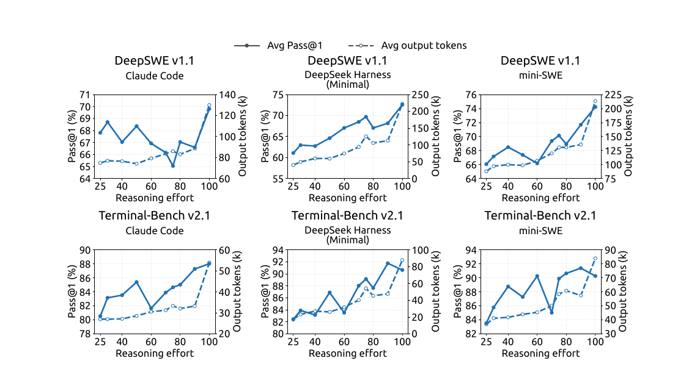
B.3 推理基准在不同推理强度下的详细结果
图 12 表明,推理强度设置对输出长度和准确率都能提供平滑、表现良好的控制,并且在全部八个基准上保持一致;这些基准涵盖竞赛数学、科学问答、开放域知识和代码。在长度方面,把强度从 25 调高到 100,每个基准上的平均回复长度都按可预测的方式增长——统一为 – 的增幅,在 AIME 2026 上从每条回复 4.6k token 增至 11.4k,在 MathArena Apex 2025 上从 29.1k 增至 86.1k——没有失控式增长,也没有异常,因此任何档位的计算成本都可以事先估算。准确率遵循同样平滑的轨迹,在每个基准上都朝正确的方向变化,没有任何基准随强度提高而退化:MathArena Apex 2025 提升 分(25.3%65.6%),Apex 2025 Shortlist 提升 ,而即使是已经饱和的基准也保持稳定(GPQA Diamond ,LiveCodeBench ),AIME 2026 则达到满分 100%。因此,模型提供了一个单一而可靠的旋钮,能以受控且可预测的方式移动成本–准确率的工作点,使每个部署都可以选择与其延迟和计算预算相匹配的强度档位,而不牺牲准确率。
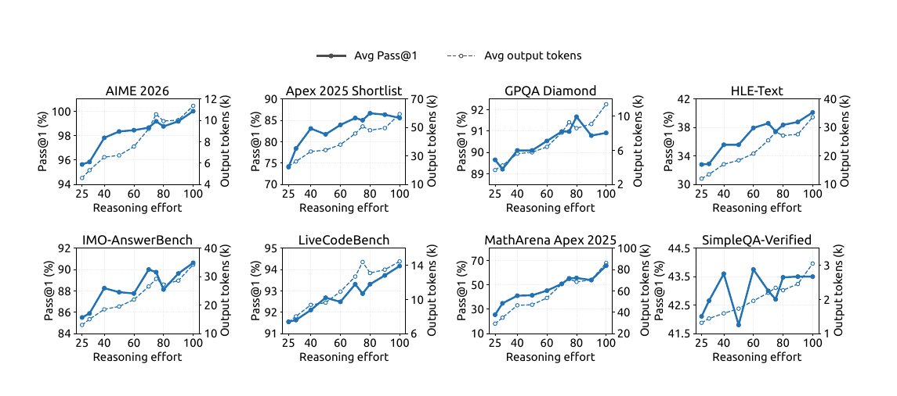
附录 C 推理强度控制中的指数 token 惩罚
这个标量强度变量提供了一种部署时的控制手段,用来调节成本–质量的权衡,而不施加硬性的 token 预算。在强化学习期间,较低的强度档位施加更强的 token 惩罚,较高的强度档位则允许更多的计算。本节为指数惩罚调度给出一个简化的动机说明。
对于一条在强度档位 下生成、含 个推理 token 的轨迹,长度扣分为
| (11) |
其中 是参考长度, 为扣分设定上限。与强度相关的 token 惩罚系数为
| (12) |
其中 是最低强度档位 处的惩罚系数, 控制惩罚衰减的速率。
为说明这一选择的动机,考虑一个固定的问题 。令 表示经过 个推理 token 之后该问题被解出的概率。在未触及上限的区域内,将偏好的推理长度 定义为
| (13) |
对于内部最优解,一阶条件为
| (14) |
其中 是额外推理给解出概率带来的边际提升。
我们假设,在相关的工作范围内,这一边际收益近似按指数衰减:
| (15) |
其中 是与具体实例相关的尺度, 决定衰减速率。将式 (12) 和式 (15) 代入式 (14),得到
| (16) |
其中 与 无关。因此,在这一局部模型下,指数惩罚调度会在所请求的强度与偏好的推理长度之间产生一个简单的一阶仿射趋势。
对于两个强度档位 ,相应的预测长度差为
| (17) |
由此可见, 主要控制趋向更短推理的总体压力,而 控制预测中对强度的敏感度。
这一推导是奖励层面的局部近似,并不是断言实测的平均长度必须是线性的或逐点单调的。实际表现可能出现偏离,原因包括:强度指令可以直接改变推理策略,生成具有随机性,智能体轨迹包含的轮数各不相同,以及子组奖励归一化会改变优化强度。该分析还假设存在内部解,此时惩罚上限并未生效。一旦达到上限,边际 token 惩罚变为零,被上限截断的区域必须单独考虑。